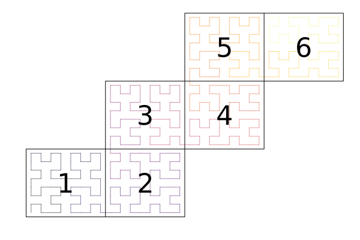
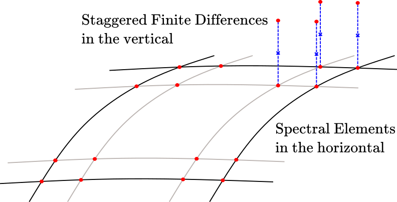

API
Utilities
ClimaCore.Utilities.PlusHalf — TypePlusHalf(i)Represents i + 1/2, but stored as internally as an integer value. Used for indexing into staggered finite difference meshes: the convention "half" values are indexed at cell faces, whereas centers are indexed at cell centers.
Supports +, - and inequalities.
See also half.
ClimaCore.Utilities.half — Constantconst half = PlusHalf(0)Utilities.Cache
ClimaCore.Utilities.Cache — ModuleUtilities.Cache
ClimaCore maintains an internal cache of topology and grid objects: this ensures that if the constructor with the same arguments is invoked again (e.g. by reading from a file), the cached object will be returned (also known as memoization). This has two main advantages:
topology and metric information can be reused, reducing memory usage.
it is easy to check if two fields live on the same grid: we can just check if the underlying grid objects are the same (
===), rather than checking all the fields are equal (via==).
However this means that objects in the cache will not be removed from the garbage collector, so we provide an interface to remove these.
ClimaCore.Utilities.Cache.cached_objects — FunctionUtilities.Cache.cached_objects()List all currently cached objects.
ClimaCore.Utilities.Cache.clean_cache! — FunctionUtilities.Cache.clean_cache!(object)Remove object from the cache of created objects.
In most cases, this function should not need to be called, unless you are constructing many grid objects, for example when doing a sweep over grid paramaters.
Utilities.Cache.clean_cache!()Remove all objects from the cache of created objects.
In most cases, this function should not need to be called, unless you are constructing many grid objects, for example when doing a sweep over grid paramaters.
DataLayouts
ClimaCore.DataLayouts — ModuleClimaCore.DataLayoutsDefines the following DataLayouts (see individual docs for more info):
TODO: Add links to these datalayouts
IJKFVHIJFHIJHFIFHIHFDataFIJFIFVFVIJFHVIJHFVIFHVIHFIH1JH2IV1JH2
Notation:
i,jare horizontal node indices within an elementkis the vertical node index within an elementfis the field index (1 if field is scalar, >1 if it is a vector field)vis the vertical element index in a stackhis the element stack index
Data layout is specified by the order in which they appear, e.g. IJKFVH indexes the underlying array as [i,j,k,f,v,h]
Datalayouts that end with the field index
One of the fundamental features of datalayouts is to be able to store multiple variables in the same array, and then access those variables by name. As such, we occasionally must index into multiple variables when performing operations with a datalayout.
We can efficiently support linear indexing with datalayouts whose field index (f) is first or last. This is for the same reason as https://docs.julialang.org/en/v1/devdocs/subarrays/#Linear-indexing:
Linear indexing can be implemented efficiently when the entire array
has a single stride that separates successive elements, starting from
some offset.Therefore, we provide special handling for these datalayouts where possible to leverage efficient linear indexing.
Here are some references containing relevant discussions and efforts to leverage efficient linear indexing:
- https://github.com/CliMA/ClimaCore.jl/issues/1889
- https://github.com/JuliaLang/julia/issues/28126
- https://github.com/JuliaLang/julia/issues/32051
- https://github.com/maleadt/StaticCartesian.jl
- https://github.com/JuliaGPU/GPUArrays.jl/pull/454#issuecomment-1431575721
- https://github.com/JuliaGPU/GPUArrays.jl/pull/520
- https://github.com/JuliaGPU/GPUArrays.jl/pull/464
ClimaCore.DataLayouts.DataF — TypeDataF{S, A} <: Data0D{S}Backing DataLayout for 0D point data.
DataF{S}(ArrayType[, ones | zeros | rand])The ArrayType constructor returns a DataF given the ArrayType and (optionally) an initialization method (one of Base.ones, Base.zeros, Random.rand).
ClimaCore.DataLayouts.IF — TypeIF{S, Ni, A} <: DataSlab1D{S, Ni}Backing DataLayout for 1D spectral element slab data.
Nodal element data (I) are contiguous for each S datatype struct field (F) for a single element slab.
A DataSlab1D view can be returned from other Data1D objects by calling slab(data, idx...).
IF{S}(ArrayType[, ones | zeros | rand]; Ni)The keyword constructor returns a IF given the ArrayType and (optionally) an initialization method (one of Base.ones, Base.zeros, Random.rand) and the keywords:
Niquadrature degrees of freedom in the horizontal direction
Objects made with the keyword constructor accept integer keyword inputs, so they are dynamically created. You may want to use a different constructor if you're making the object in a performance-critical section, and if you know the type parameters at compile time.
ClimaCore.DataLayouts.IJF — TypeIJF{S, Nij, A} <: DataSlab2D{S, Nij}Backing DataLayout for 2D spectral element slab data.
Nodal element data (I,J) are contiguous for each S datatype struct field (F) for a single element slab.
A DataSlab2D view can be returned from other Data2D objects by calling slab(data, idx...).
IJF{S}(ArrayType[, ones | zeros | rand]; Nij)The keyword constructor returns a IJF given the ArrayType and (optionally) an initialization method (one of Base.ones, Base.zeros, Random.rand) and the keywords:
Nijquadrature degrees of freedom per horizontal direction
Objects made with the keyword constructor accept integer keyword inputs, so they are dynamically created. You may want to use a different constructor if you're making the object in a performance-critical section, and if you know the type parameters at compile time.
ClimaCore.DataLayouts.VF — TypeVF{S, A} <: DataColumn{S, Nv}Backing DataLayout for 1D FV column data.
Column level data (V) are contiguous for each S datatype struct field (F).
A DataColumn view can be returned from other Data1DX, Data2DX objects by calling column(data, idx...).
VF{S}(ArrayType[, ones | zeros | rand]; Nv)The keyword constructor returns a VF given the ArrayType and (optionally) an initialization method (one of Base.ones, Base.zeros, Random.rand) and the keywords:
Nvnumber of vertical degrees of freedom
Objects made with the keyword constructor accept integer keyword inputs, so they are dynamically created. You may want to use a different constructor if you're making the object in a performance-critical section, and if you know the type parameters at compile time.
ClimaCore.DataLayouts.IFH — TypeIFH{S,Ni,Nh,A} <: Data1D{S, Ni}
IFH{S,Ni,Nh}(ArrayType)Backing DataLayout for 1D spectral element slabs.
Element nodal point (I) data is contiguous for each datatype S struct field (F), for each 1D mesh element (H).
The ArrayType-constructor makes a IFH 1D Spectral DataLayout given the backing ArrayType, quadrature degrees of freedom Ni, and the number of mesh elements Nh.
IFH{S}(ArrayType[, ones | zeros | rand]; Ni, Nh)The keyword constructor returns a IFH given the ArrayType and (optionally) an initialization method (one of Base.ones, Base.zeros, Random.rand) and the keywords:
Niquadrature degrees of freedom in the horizontal directionNhnumber of mesh elements
Objects made with the keyword constructor accept integer keyword inputs, so they are dynamically created. You may want to use a different constructor if you're making the object in a performance-critical section, and if you know the type parameters at compile time.
ClimaCore.DataLayouts.IJFH — TypeIJFH{S, Nij, A} <: Data2D{S, Nij}
IJFH{S,Nij}(ArrayType, nelements)Backing DataLayout for 2D spectral element slabs.
Element nodal point (I,J) data is contiguous for each datatype S struct field (F), for each 2D mesh element slab (H).
The ArrayType-constructor constructs a IJFH 2D Spectral DataLayout given the backing ArrayType, quadrature degrees of freedom Nij × Nij, and the number of mesh elements nelements.
IJFH{S}(ArrayType[, Base.ones | zeros | rand]; Nij, Nh)The keyword constructor returns a IJFH given the ArrayType and (optionally) an initialization method (one of Base.ones, Base.zeros, Random.rand) and the keywords:
Nijquadrature degrees of freedom per horizontal directionNhnumber of mesh elements
Objects made with the keyword constructor accept integer keyword inputs, so they are dynamically created. You may want to use a different constructor if you're making the object in a performance-critical section, and if you know the type parameters at compile time.
ClimaCore.DataLayouts.VIFH — TypeVIFH{S, Nv, Ni, A} <: Data1DX{S, Nv, Ni}Backing DataLayout for 1D spectral element slab + extruded 1D FV column data.
Column levels (V) are contiguous for every element nodal point (I) for each datatype S struct field (F), for each 1D mesh element slab (H).
VIFH{S}(ArrayType[, ones | zeros | rand]; Nv, Ni, Nh)The keyword constructor returns a VIFH given the ArrayType and (optionally) an initialization method (one of Base.ones, Base.zeros, Random.rand) and the keywords:
Nvnumber of vertical degrees of freedomNiquadrature degrees of freedom in the horizontal directionNhnumber of horizontal elements
Objects made with the keyword constructor accept integer keyword inputs, so they are dynamically created. You may want to use a different constructor if you're making the object in a performance-critical section, and if you know the type parameters at compile time.
ClimaCore.DataLayouts.VIJFH — TypeVIJFH{S, Nij, A} <: Data2DX{S, Nij}Backing DataLayout for 2D spectral element slab + extruded 1D FV column data.
Column levels (V) are contiguous for every element nodal point (I, J) for each S datatype struct field (F), for each 2D mesh element slab (H).
VIJFH{S}(ArrayType[, ones | zeros | rand]; Nv, Nij, Nh)The keyword constructor returns a VIJFH given the ArrayType and (optionally) an initialization method (one of Base.ones, Base.zeros, Random.rand) and the keywords:
Nvnumber of vertical degrees of freedomNijquadrature degrees of freedom per horizontal directionNhnumber of horizontal elements
Objects made with the keyword constructor accept integer keyword inputs, so they are dynamically created. You may want to use a different constructor if you're making the object in a performance-critical section, and if you know the type parameters at compile time.
ClimaCore.DataLayouts.IHF — TypeIHF{S,Ni,Nh,A} <: Data1D{S, Ni}
IHF{S,Ni,Nh}(ArrayType)Backing DataLayout for 1D spectral element slabs.
Element nodal point (I) data is contiguous for each datatype S struct field (F), for each 1D mesh element (H).
The ArrayType-constructor makes a IHF 1D Spectral DataLayout given the backing ArrayType, quadrature degrees of freedom Ni, and the number of mesh elements Nh.
IHF{S}(ArrayType[, ones | zeros | rand]; Ni, Nh)The keyword constructor returns a IHF given the ArrayType and (optionally) an initialization method (one of Base.ones, Base.zeros, Random.rand) and the keywords:
Niquadrature degrees of freedom in the horizontal directionNhnumber of mesh elements
Objects made with the keyword constructor accept integer keyword inputs, so they are dynamically created. You may want to use a different constructor if you're making the object in a performance-critical section, and if you know the type parameters at compile time.
ClimaCore.DataLayouts.IJHF — TypeIJHF{S, Nij, A} <: Data2D{S, Nij}
IJHF{S,Nij}(ArrayType, nelements)Backing DataLayout for 2D spectral element slabs.
Element nodal point (I,J) data is contiguous for each datatype S struct field (F), for each 2D mesh element slab (H).
The ArrayType-constructor constructs a IJHF 2D Spectral DataLayout given the backing ArrayType, quadrature degrees of freedom Nij × Nij, and the number of mesh elements nelements.
IJHF{S}(ArrayType[, Base.ones | zeros | rand]; Nij, Nh)The keyword constructor returns a IJHF given the ArrayType and (optionally) an initialization method (one of Base.ones, Base.zeros, Random.rand) and the keywords:
Nijquadrature degrees of freedom per horizontal directionNhnumber of mesh elements
Objects made with the keyword constructor accept integer keyword inputs, so they are dynamically created. You may want to use a different constructor if you're making the object in a performance-critical section, and if you know the type parameters at compile time.
ClimaCore.DataLayouts.VIHF — TypeVIHF{S, Nv, Ni, A} <: Data1DX{S, Nv, Ni}Backing DataLayout for 1D spectral element slab + extruded 1D FV column data.
Column levels (V) are contiguous for every element nodal point (I) for each datatype S struct field (F), for each 1D mesh element slab (H).
VIHF{S}(ArrayType[, ones | zeros | rand]; Nv, Ni, Nh)The keyword constructor returns a VIHF given the ArrayType and (optionally) an initialization method (one of Base.ones, Base.zeros, Random.rand) and the keywords:
Nvnumber of vertical degrees of freedomNiquadrature degrees of freedom in the horizontal directionNhnumber of horizontal elements
Objects made with the keyword constructor accept integer keyword inputs, so they are dynamically created. You may want to use a different constructor if you're making the object in a performance-critical section, and if you know the type parameters at compile time.
ClimaCore.DataLayouts.VIJHF — TypeVIJHF{S, Nij, A} <: Data2DX{S, Nij}Backing DataLayout for 2D spectral element slab + extruded 1D FV column data.
Column levels (V) are contiguous for every element nodal point (I, J) for each S datatype struct field (F), for each 2D mesh element slab (H).
VIJHF{S}(ArrayType[, ones | zeros | rand]; Nv, Nij, Nh)The keyword constructor returns a VIJHF given the ArrayType and (optionally) an initialization method (one of Base.ones, Base.zeros, Random.rand) and the keywords:
Nvnumber of vertical degrees of freedomNijquadrature degrees of freedom per horizontal directionNhnumber of horizontal elements
Objects made with the keyword constructor accept integer keyword inputs, so they are dynamically created. You may want to use a different constructor if you're making the object in a performance-critical section, and if you know the type parameters at compile time.
Geometry
Global Geometry
ClimaCore.Geometry.AbstractGlobalGeometry — TypeAbstractGlobalGeometryDetermines the conversion from local coordinates and vector bases to a Cartesian basis.
ClimaCore.Geometry.CartesianGlobalGeometry — TypeCartesianGlobalGeometry()Specifies that the local coordinates align with the Cartesian coordinates, e.g. XYZPoint aligns with Cartesian123Point, and UVWVector aligns with Cartesian123Vector.
Coordinates
ClimaCore.Geometry.AbstractPoint — TypeAbstractPointRepresents a point in space.
The following types are supported:
XPoint(x)YPoint(y)ZPoint(z)XYPoint(x, y)XZPoint(x, z)XYZPoint(x, y, z)LatPoint(lat)LongPoint(long)LatLongPoint(lat, long)LatLongZPoint(lat, long, z)Cartesian1Point(x1)Cartesian2Point(x2)Cartesian3Point(x3)Cartesian12Point(x1, x2)Cartesian13Point(x1, x3)Cartesian123Point(x1, x2, x3)
ClimaCore.Geometry.float_type — Functionfloat_type(T)Return the floating point type backing T: T can either be an object or a type.
Points represent locations in space, specified by coordinates in a given coordinate system (Cartesian, spherical, etc), whereas vectors, on the other hand, represent displacements in space.
An analogy with time works well: times (also called instants or datetimes) are locations in time, while, durations are displacements in time.
Note 1: Latitude and longitude are specified via angles (and, therefore, trigonometric functions: cosd, sind, acosd, asind, tand,...) in degrees, not in radians. Moreover, lat (usually denoted by $\theta$) $\in [-90.0, 90.0]$, and long (usually denoted by $\lambda$) $\in [-180.0, 180.0]$.
Note 2:: In a Geometry.LatLongZPoint(lat, long, z), z represents the elevation above the surface of the sphere with radius R (implicitly accounted for in the geoemtry).
Note 3: There are also a set of specific Cartesian points (Cartesian1Point(x1), Cartesian2Point(x2), etc). These are occasionally useful for converting everything to a full Cartesian domain (e.g. for visualization purposes). These are distinct from XYZPoint as ZPoint can mean different things in different domains.
Domains
Types
ClimaCore.Domains.AbstractDomain — TypeAbstractDomainA domain represents a region of space.
ClimaCore.Domains.IntervalDomain — TypeIntervalDomain(coord⁻, coord⁺; periodic=true)
IntervalDomain(coord⁻, coord⁺; boundary_names::Tuple{Symbol,Symbol})Construct a IntervalDomain, the closed interval is given by coord⁻, coord⁺ coordinate arguments.
Either a periodic or boundary_names keyword argument is required.
ClimaCore.Domains.RectangleDomain — TypeRectangleDomain(x1::ClosedInterval, x2::ClosedInterval;
x1boundary::Tuple{Symbol,Symbol},
x2boundary::Tuple{Symbol,Symbol},
x1periodic = false,
x2periodic = false,
)Construct a RectangularDomain in the horizontal. If a given x1 or x2 boundary is not periodic, then x1boundary or x2boundary boundary name keyword arguments must be supplied.
ClimaCore.Domains.SphereDomain — TypeSphereDomain(radius)A domain representing the surface of a sphere with radius radius.
Interfaces
ClimaCore.Domains.boundary_names — Functionboundary_names(obj::Union{AbstractDomain, AbstractMesh, AbstractTopology})A tuple or vector of unique boundary names of a spatial domain.
Meshes
A Mesh is a division of a domain into elements.
Mesh types
ClimaCore.Meshes.AbstractMesh — TypeAbstractMesh{dim}A Mesh is an object which represents how we discretize a domain into elements.
It should be lightweight (i.e. exists on all MPI ranks), e.g for meshes stored in a file, it would contain the filename.
Face and vertex numbering
In 1D, faces and vertices are the same, and both are numbered [1,2].
In 2D, a face is a line segment between to vertices, and both are numbered [1,2,3,4], in a counter-clockwise direction.
v4 f3 v3
o-----------------o
| | face vertices
| | f1 => v1 v2
f4 | | f2 f2 => v2 v3
| | f3 => v3 v4
| | f4 => v4 v1
| |
o-----------------o
v1 f1 v2Interface
A subtype of AbstractMesh should define the following methods:
domain(mesh)elements(mesh)is_boundary_face(mesh, elem, face)boundary_face_name(mesh, elem, face)opposing_face(mesh, elem, face)coordinates(mesh, elem, vert)containing_element(optional)
The following types/methods are provided by AbstractMesh:
ClimaCore.Meshes.IntervalMesh — TypeIntervalMesh <: AbstractMeshA 1D mesh on an IntervalDomain.
Constuctors
IntervalMesh(domain::IntervalDomain, faces::AbstractVector)Construct a 1D mesh with face locations at faces.
IntervalMesh(domain::IntervalDomain[, stretching=Uniform()]; nelems=)Constuct a 1D mesh on domain with nelems elements, using stretching. Possible values of stretching are:
ClimaCore.Meshes.RectilinearMesh — TypeRectilinearMesh <: AbstractMesh2DConstructors
RectilinearMesh(domain::RectangleDomain, n1, n2)Construct a RectilinearMesh of equally-spaced n1 by n2 elements on domain.
RectilinearMesh(intervalmesh1::IntervalMesh1, intervalmesh2::IntervalMesh2)Construct the product mesh of intervalmesh1 and intervalmesh2.
ClimaCore.Meshes.AbstractCubedSphere — TypeAbstractCubedSphere <: AbstractMesh2DThis is an abstract type of cubed-sphere meshes on SphereDomains. A cubed-sphere mesh has 6 panels, laid out as follows:
: Panel 1 :
+-------------+-------------+
| +x1 | +x1 |
| | |
| Panel | Panel |
|+x3 5 -x3|-x2 6 +x2|
| -x2 | -x3 |
| | |
| -x1 | -x1 |
+-------------+-------------+-------------+
| -x2 | -x2 |
| | |
| Panel | Panel |
|+x1 3 -x1|+x3 4 -x3|
| +x3 | -x1 |
| | |
| +x2 | +x2 |
+-------------+-------------+-------------+
| +x3 | +x3 |
| | |
| Panel | Panel |
|-x2 1 +x2|+x1 2 -x1|
| +x1 | +x2 |
| | |
| -x3 | -x3 |
+-------------+-------------+
: Panel 6 :This is the same panel ordering used by the S2 Geometry library (though we use 1-based instead of 0-based numering).
Elements are indexed by a CartesianIndex{3} object, where the components are:
- horizontal element index (left to right) within each panel.
- vertical element index (bottom to top) within each panel.
- panel number
Subtypes should have the following fields:
domain: aSphereDomainne: number of elements across each panel
External links
ClimaCore.Meshes.EquiangularCubedSphere — TypeEquiangularCubedSphere <: AbstractCubedSphereAn equiangular gnomonic mesh proposed by [8]. Uses the element indexing convention of AbstractCubedSphere.
Constructors
EquiangularCubedSphere(
domain::Domains.SphereDomain,
ne::Integer,
localelementmap=NormalizedBilinearMap()
)Constuct an EquiangularCubedSphere on domain with ne elements across each panel.
ClimaCore.Meshes.EquidistantCubedSphere — TypeEquidistantCubedSphere <: AbstractCubedSphereAn equidistant gnomonic mesh outlined in [9] and [10]. Uses the element indexing convention of AbstractCubedSphere.
Constructors
EquidistantCubedSphere(domain::Domains.SphereDomain, ne::Integer)Constuct an EquidistantCubedSphere on domain with ne elements across each panel.
ClimaCore.Meshes.ConformalCubedSphere — TypeConformalCubedSphere <: AbstractCubedSphereA conformal mesh outlined in [9]. Uses the element indexing convention of AbstractCubedSphere.
Constructors
ConformalCubedSphere(domain::Domains.SphereDomain, ne::Integer)Constuct a ConformalCubedSphere on domain with ne elements across each panel.
Local element map
ClimaCore.Meshes.LocalElementMap — TypeLocalElementMapAn abstract type of mappings from the reference element to a physical domain.
ClimaCore.Meshes.IntrinsicMap — TypeIntrinsicMap()This LocalElementMap uses the intrinsic mapping of the cubed sphere to map the reference element to the physical domain.
ClimaCore.Meshes.NormalizedBilinearMap — TypeNormalizedBilinearMap()The LocalElementMap for meshes on spherical domains of [11]. It uses bilinear interpolation between the Cartesian coordinates of the element vertices, then normalizes the result to lie on the sphere.
Mesh stretching
ClimaCore.Meshes.Uniform — TypeUniform()Use uniformly-sized elements.
ClimaCore.Meshes.ExponentialStretching — TypeExponentialStretching(H::FT)Apply exponential stretching to the domain when constructing elements. H is the scale height (a typical atmospheric scale height H ≈ 7.5km).
For an interval $[z_0,z_1]$, this makes the elements uniformally spaced in $\zeta$, where
\[\zeta = \frac{1 - e^{-\eta/h}}{1-e^{-1/h}},\]
where $\eta = \frac{z - z_0}{z_1-z_0}$, and $h = \frac{H}{z_1-z_0}$ is the non-dimensional scale height. If reverse_mode is true, the smallest element is at the top, and the largest at the bottom (this is typical for land model configurations).
Then, the user can define a stretched mesh via
ClimaCore.Meshes.IntervalMesh(interval_domain, ExponentialStretching(H); nelems::Int, reverse_mode = false)faces contain reference z without any warping.
ClimaCore.Meshes.GeneralizedExponentialStretching — TypeGeneralizedExponentialStretching(dz_bottom::FT, dz_top::FT)Apply a generalized form of exponential stretching to the domain when constructing elements. dz_bottom and dz_top are target element grid spacings at the bottom and at the top of the vertical column domain (m). In typical atmosphere configurations, dz_bottom is the smallest grid spacing and dz_top the largest one. On the other hand, for typical land configurations, dz_bottom is the largest grid spacing and dz_top the smallest one.
For land configurations, use reverse_mode = true (default value false).
Then, the user can define a generalized stretched mesh via
ClimaCore.Meshes.IntervalMesh(interval_domain, GeneralizedExponentialStretching(dz_bottom, dz_top); nelems::Int, reverse_mode = false)faces contain reference z without any warping.
ClimaCore.Meshes.HyperbolicTangentStretching — TypeHyperbolicTangentStretching(dz_surface::FT)Apply a hyperbolic tangent stretching to the domain when constructing elements. dz_surface is the target element grid spacing at the surface. In typical atmosphere configuration, it is the grid spacing at the bottom of the vertical column domain (m). On the other hand, for typical land configurations, it is the grid spacing at the top of the vertical column domain.
For an interval $[z_0,z_1]$, this makes the elements uniformally spaced in $\zeta$, where
\[\eta = 1 - \frac{tanh[\gamma(1-\zeta)]}{tanh(\gamma)},\]
where $\eta = \frac{z - z_0}{z_1-z_0}$. The stretching parameter $\gamma$ is chosen to achieve a given resolution dz_surface at the surface.
Then, the user can define a stretched mesh via
ClimaCore.Meshes.IntervalMesh(interval_domain, HyperbolicTangentStretching(dz_surface); nelems::Int, reverse_mode)reverse_mode is default to false for atmosphere configurations. For land configurations, use reverse_mode = true.
faces contain reference z without any warping.
Mesh utilities
ClimaCore.Meshes.truncate_mesh — Functiontruncate_mesh(
parent_mesh::AbstractMesh,
trunc_domain::IntervalDomain{CT},
)Constructs an IntervalMesh, truncating the given parent_mesh defined on a truncated trunc_domain. The truncation preserves the number of degrees of freedom covering the space from the trunc_domain's z_bottom to z_top, adjusting the stretching.
Interfaces
ClimaCore.Meshes.domain — FunctionMeshes.domain(mesh::AbstractMesh)The domain (a subtype of Domains.AbstractDomain) on which the mesh is defined.
ClimaCore.Meshes.elements — FunctionMeshes.elements(mesh::AbstractMesh)An iterator over the elements of a mesh. Elements of a mesh can be of any type.
ClimaCore.Meshes.nelements — Functionnelements(mesh::AbstractMesh)The number of elements in the mesh.
ClimaCore.Meshes.is_boundary_face — FunctionMeshes.is_boundary_face(mesh::AbstractMesh, elem, face::Int)::BoolDetermine whether face face of element elem is on the boundary of mesh.
elem should be an element of elements(mesh).
ClimaCore.Meshes.boundary_face_name — FunctionMeshes.boundary_face_name(mesh::AbstractMesh, elem, face::Int)::Union{Symbol,Nothing}The name of the boundary facing face of element elem, or nothing if it is not on the boundary.
ClimaCore.Meshes.opposing_face — Functionopelem, opface, reversed = Meshes.opposing_face(mesh::AbstractMesh, elem, face::Int)The element and face (opelem, opface) that oppose face face of element elem.
ClimaCore.Meshes.coordinates — FunctionMeshes.coordinates(mesh, elem, vert::Int)
Meshes.coordinates(mesh, elem, ξ::SVector)Return the physical coordinates of a point in an element elem of mesh. The position of the point can either be a vertex number vert or the coordinates ξ in the reference element.
ClimaCore.Meshes.containing_element — Functionelem = Meshes.containing_element(mesh::AbstractMesh, coord)The element elem in mesh containing the coordinate coord. If the coordinate falls on the boundary between two or more elements, an arbitrary element is chosen.
ClimaCore.Meshes.reference_coordinates — Functionξ = Meshes.reference_coordinates(mesh::AbstractMesh, elem, coord)An SVector of coordinates in the reference element such that
Meshes.coordinates(mesh, elem, ξ) == coordThis can be used for interpolation to a specific point.
ClimaCore.Meshes.SharedVertices — TypeMeshes.SharedVertices(mesh, elem, vert)An iterator over (element, vertex) pairs that are shared with (elem,vert).
ClimaCore.Meshes.face_connectivity_matrix — FunctionM = Meshes.face_connectivity_matrix(mesh, elemorder = elements(mesh))Construct a Bool-valued SparseCSCMatrix containing the face connections of mesh. Elements are indexed according to elemorder.
Note that M[i,i] == true only if two distinct faces of element i are connected.
ClimaCore.Meshes.vertex_connectivity_matrix — FunctionM = Meshes.vertex_connectivity_matrix(mesh, elemorder = elements(mesh))Construct a Bool-valued SparseCSCMatrix containing the vertex connections of mesh. Elements are indexed according to elemorder.
Note that M[i,i] == true only if two distinct vertices of element i are connected.
ClimaCore.Meshes.linearindices — FunctionMeshes.linearindices(elemorder)Given a data structure elemorder[i] = elem that orders elements, construct the inverse map from orderindex = linearindices(elemorder) such that orderindex[elem] = i.
This will try to use the most efficient structure available.
ClimaCore.Meshes.element_horizontal_length_scale — FunctionMeshes.element_horizontal_length_scale(mesh::AbstractMesh)The approximate length scale (in units of distance) of the elements of the mesh.
Topologies
A Topology determines the ordering and connections between elements of a mesh. 
Types
ClimaCore.Topologies.AbstractTopology — TypeAbstractTopology
Subtypes of AbstractHorizontalTopology define connectiveness of a mesh in the horizontal domain.
Interfaces
nelemsdomain(topology::AbstractTopology)meshnlocalelemsnneighborsnsendelemsnghostelemslocalelemindexvertex_coordinatesopposing_faceface_node_indexinterior_facesghost_facesvertex_node_indexlocal_neighboring_elementsghost_neighboring_elementslocal_verticesghost_verticesneighborsboundary_tagsboundary_tagboundary_faces
ClimaCore.Topologies.IntervalTopology — TypeIntervalTopology([context::SingletonCommsContext,] mesh::IntervalMesh)A sequential topology on an Meshes.IntervalMesh.
ClimaCore.Topologies.Topology2D — TypeTopology2D(mesh::AbstractMesh2D, elemorder=Mesh.elements(mesh))This is a distributed topology for 2D meshes. elemorder is a vector or other linear ordering of the Mesh.elements(mesh). elempid is a sorted vector of the same length as elemorder, each element of which contains the pid of the owning process.
Internally, we can refer to elements in several different ways:
elem: an element of themesh. Often aCartesianIndexobject.gidx: "global index": an enumeration of all elements:elemorder[gidx] == elemorderindex[elem] == gidx
lidx: "local index": an enumeration of local elements.local_elem_gidx[lidx] == gidx
sidx: "send index": an index into the send buffer of a local element. A single local element may have multiplesidxs if it needs to be send to multiple processes.send_elem_lidx[sidx] == lidx
ridx: "receive index": an index into the receive buffer of a ghost element.recv_elem_gidx[ridx] == gidx
ClimaCore.Topologies.spacefillingcurve — Functionspacefillingcurve(mesh::Meshes.AbstractCubedSphere)Generate element ordering, elemorder, based on a space filling curve for a CubedSphere mesh.
spacefillingcurve(mesh::Meshes.RectilinearMesh)Generate element ordering, elemorder, based on a space filling curve for a Rectilinear mesh.
ClimaCore.Topologies.nelems — Functionnelems(topology)The total number of elements in topology.
ClimaCore.Topologies.nneighbors — Functionnneighbors(topology)The number of neighbors of this process in topology.
ClimaCore.Topologies.nsendelems — Functionnsendelems(topology)The number of elements to send to neighbors in topology.
ClimaCore.Topologies.nghostelems — Functionnghostelems(topology)The number of ghost elements in topology.
ClimaCore.Topologies.localelemindex — Functionlocalelemindex(topology, elem)The local index for the specified element; useful for distributed topologies.
ClimaCore.Topologies.face_node_index — Functioni,j = face_node_index(face, Nq, q, reversed=false)The node indices of the qth node on face face, where Nq is the number of face nodes in each direction.
ClimaCore.Topologies.ghost_faces — Functionghost_faces(topology::AbstractTopology)An iterator over the ghost faces of topology. Each element of the iterator is a 5-tuple the form
(elem1, face1, elem2, face2, reversed)where elemX, faceX are the element and face numbers, and reversed indicates whether they have opposing orientations.
ClimaCore.Topologies.vertex_node_index — Functioni,j = vertex_node_index(vertex_num, Nq)The node indices of vertex_num, where Nq is the number of face nodes in each direction.
ClimaCore.Topologies.local_vertices — Functionlocal_vertices(topology)An iterator over the interior vertices of topology. Each vertex is an iterator over (lidx, vert) pairs.
ClimaCore.Topologies.ghost_vertices — Functionghost_vertices(topology)An iterator over the ghost vertices of topology. Each vertex is an iterator over (isghost, lidx/ridx, vert) pairs.
ClimaCore.Topologies.neighbors — Functionneighbors(topology)Returns an array of the PIDs of the neighbors of this process.
Interfaces
ClimaCore.Topologies.mesh — Functionmesh(topology)Returns the mesh underlying the topology
ClimaCore.Topologies.nlocalelems — Functionnlocalelems(topology)The number of local elements in topology.
ClimaCore.Topologies.vertex_coordinates — Function(c1,c2,c3,c4) = vertex_coordinates(topology, elem)The coordinates of the 4 vertices of element elem.
ClimaCore.Topologies.opposing_face — Function(opelem, opface, reversed) = opposing_face(topology, elem, face)The opposing face of face number face of element elem in topology.
opelemis the opposing element number, 0 for a boundary, negative for a ghost elementopfaceis the opposite face number, or boundary face number if a boundaryreversedindicates whether the opposing face has the opposite orientation.
ClimaCore.Topologies.interior_faces — Functioninterior_faces(topology::AbstractTopology)An iterator over the interior faces of topology. Each element of the iterator is a 5-tuple the form
(elem1, face1, elem2, face2, reversed)where elemX, faceX are the element and face numbers, and reversed indicates whether they have opposing orientations.
ClimaCore.Topologies.boundary_tags — Functionboundary_tags(topology)A Tuple or NamedTuple of the boundary tags of the topology. A boundary tag is an integer that uniquely identifies a boundary.
ClimaCore.Topologies.boundary_tag — Functionboundary_tag(topology, name::Symbol)The boundary tag of the topology for boundary name name. A boundary tag is an integer that uniquely identifies a boundary.
ClimaCore.Topologies.boundary_faces — Functionboundary_faces(topology, boundarytag)An iterator over the faces of topology which face the boundary with tag boundarytag. Each element of the iterator is an (elem, face) pair.
ClimaCore.Topologies.local_neighboring_elements — Functionlocal_neighboring_elements(topology::AbstractTopology, lidx::Integer)An iterator of the local element indices (lidx) of the local elements which are neighbors of the local element lidx in topology (excluding lidx itself).
ClimaCore.Topologies.ghost_neighboring_elements — Functionghost_neighboring_elements(topology::AbstractTopology, ridx::Integer)An iterator of the receive buffer indices (ridx) of the ghost elements which are neighbors of the local element lidx in topology.
Grids
ClimaCore.Grids.CellFace — TypeCellFace()Cell face location
ClimaCore.Grids.CellCenter — TypeCellCenter()Cell center location
ClimaCore.Grids.ColumnGrid — TypeColumnGrid(
full_grid :: ExtrudedFiniteDifferenceGrid,
colidx :: ColumnIndex,
)A view into a column of a ExtrudedFiniteDifferenceGrid. This can be used as an
ClimaCore.Grids.FiniteDifferenceGrid — TypeFiniteDifferenceGrid(topology::Topologies.IntervalTopology)
FiniteDifferenceGrid(device::ClimaComms.AbstractDevice, mesh::Meshes.IntervalMesh)Construct a FiniteDifferenceGrid from an IntervalTopology (or an IntervalMesh).
This is an object which contains all the necessary geometric information.
To avoid unnecessary duplication, we memoize the construction of the grid.
ClimaCore.Grids.ExtrudedFiniteDifferenceGrid — TypeExtrudedFiniteDifferenceGrid(
horizontal_space::AbstractSpace,
vertical_space::FiniteDifferenceSpace,
hypsography::HypsographyAdaption = Flat(),
)Construct an ExtrudedFiniteDifferenceGrid from the horizontal and vertical spaces.
ClimaCore.Grids.SpectralElementGrid1D — TypeSpectralElementGrid1D(mesh::Meshes.IntervalMesh, quadrature_style::Quadratures.QuadratureStyle)A one-dimensional space: within each element the space is represented as a polynomial.
ClimaCore.Grids.SpectralElementGrid2D — TypeSpectralElementSpace2D <: AbstractSpaceA two-dimensional space: within each element the space is represented as a polynomial.
Hypsography
ClimaCore.Grids.Flat — TypeFlat()No surface hypsography.
CommonGrids
ClimaCore.CommonGrids — ModuleCommonGridsCommonGrids contains convenience constructors for common grids. Constructors in this module are sometimes dynamically created. You may want to use a different constructor if you're making the object in a performance-critical section, and if you know the type parameters at compile time.
If no convenience constructor exists, then you may need to create a custom grid using our low-level compose-able API.
Transitioning to using CommonGrids
You may have constructed a grid in the following way:
using ClimaComms
using ClimaCore: DataLayouts, Geometry, Topologies, Quadratures, Domains, Meshes, Grids
FT = Float64
z_elem = 63
z_min = FT(0)
z_max = FT(1)
radius = FT(6.371229e6)
h_elem = 15
n_quad_points = 4
device = ClimaComms.device()
context = ClimaComms.context(device)
hypsography = Grids.Flat()
global_geometry = Geometry.ShallowSphericalGlobalGeometry{FT}(radius)
quad = Quadratures.GLL{n_quad_points}()
h_mesh = Meshes.EquiangularCubedSphere(Domains.SphereDomain{FT}(radius), h_elem)
h_topology = Topologies.Topology2D(context, h_mesh)
z_boundary_names = (:bottom, :top)
z_domain = Domains.IntervalDomain(
Geometry.ZPoint{FT}(z_min),
Geometry.ZPoint{FT}(z_max);
boundary_names = z_boundary_names,
)
z_mesh = Meshes.IntervalMesh(z_domain; nelems = z_elem)
h_grid = Grids.SpectralElementGrid2D(h_topology, quad)
z_topology = Topologies.IntervalTopology(context, z_mesh)
z_grid = Grids.FiniteDifferenceGrid(z_topology)
grid = Grids.ExtrudedFiniteDifferenceGrid(
h_grid,
z_grid,
hypsography,
global_geometry,
)You may re-write this as:
using ClimaCore.CommonGrids: ExtrudedCubedSphereGrid
grid = ExtrudedCubedSphereGrid(;
z_elem = 63,
z_min = 0,
z_max = 1,
radius = 6.371229e6,
h_elem = 15,
n_quad_points = 4,
)ClimaCore.CommonGrids.ExtrudedCubedSphereGrid — FunctionExtrudedCubedSphereGrid(
::Type{<:AbstractFloat}; # defaults to Float64
z_elem::Integer,
z_min::Real,
z_max::Real,
radius::Real,
h_elem::Integer,
n_quad_points::Integer,
device::ClimaComms.AbstractDevice = ClimaComms.device(),
context::ClimaComms.AbstractCommsContext = ClimaComms.context(device),
stretch::Meshes.StretchingRule = Meshes.Uniform(),
hypsography_fun = (h_grid, z_grid) -> Grids.Flat(),
global_geometry::Geometry.AbstractGlobalGeometry = Geometry.ShallowSphericalGlobalGeometry{FT}(radius),
quad::Quadratures.QuadratureStyle = Quadratures.GLL{n_quad_points}(),
h_mesh = Meshes.EquiangularCubedSphere(Domains.SphereDomain{FT}(radius), h_elem),
h_topology::Topologies.AbstractDistributedTopology = Topologies.Topology2D(context, h_mesh),
horizontal_layout_type = DataLayouts.IJFH,
z_mesh::Meshes.IntervalMesh = DefaultZMesh(FT; z_min, z_max, z_elem, stretch),
enable_bubble::Bool = false
enable_mask::Bool = false
)A convenience constructor, which builds an Grids.ExtrudedFiniteDifferenceGrid, given:
FTthe floating-point type (defaults toFloat64) [Float32,Float64]z_elemthe number of z-pointsz_minthe domain minimum along the z-direction.z_maxthe domain maximum along the z-direction.radiusthe radius of the cubed sphereh_elemthe number of horizontal elements per side of every panel (6 panels in total)n_quad_pointsthe number of quadrature points per horizontal elementdevicetheClimaComms.devicecontexttheClimaComms.contextstretchthe meshMeshes.StretchingRule(defaults toMeshes.Uniform)hypsography_funa function or callable object (hypsography_fun(h_grid, z_grid) -> hypsography) for constructing the hypsography model.global_geometrythe global geometry (defaults toGeometry.CartesianGlobalGeometry)quadthe quadrature style (defaults toQuadratures.GLL{n_quad_points})h_meshthe horizontal mesh (defaults toMeshes.EquiangularCubedSphere)h_topologythe horizontal topology (defaults toTopologies.Topology2D)horizontal_layout_typethe horizontal DataLayout type (defaults toDataLayouts.IJFH). This parameter describes how data is arranged in memory. SeeGrids.SpectralElementGrid2Dfor its use.z_meshthe vertical mesh, defaults to anMeshes.IntervalMeshalongzwith givenstretchenable_bubbleenables the "bubble correction" for more accurate element areas when computing the spectral element space. SeeGrids.SpectralElementGrid2Dfor more information.enable_maskenables a horizontal mask, for skipping operations on specified columns viaset_mask!.
Example usage
using ClimaCore.CommonGrids
grid = ExtrudedCubedSphereGrid(;
z_elem = 10,
z_min = 0,
z_max = 1,
radius = 10,
h_elem = 10,
n_quad_points = 4,
)ClimaCore.CommonGrids.CubedSphereGrid — FunctionCubedSphereGrid(
::Type{<:AbstractFloat}; # defaults to Float64
radius::Real,
h_elem::Integer,
n_quad_points::Integer,
device::ClimaComms.AbstractDevice = ClimaComms.device(),
context::ClimaComms.AbstractCommsContext = ClimaComms.context(device),
quad::Quadratures.QuadratureStyle = Quadratures.GLL{n_quad_points}(),
h_mesh = Meshes.EquiangularCubedSphere(Domains.SphereDomain{FT}(radius), h_elem),
h_topology::Topologies.AbstractDistributedTopology = Topologies.Topology2D(context, h_mesh),
horizontal_layout_type = DataLayouts.IJFH,
enable_mask = false,
)A convenience constructor, which builds a Grids.SpectralElementGrid2D given:
FTthe floating-point type (defaults toFloat64) [Float32,Float64]radiusthe radius of the cubed sphereh_elemthe number of horizontal elements per side of every panel (6 panels in total)n_quad_pointsthe number of quadrature points per horizontal elementdevicetheClimaComms.devicecontexttheClimaComms.contextquadthe quadrature style (defaults toQuadratures.GLL{n_quad_points})h_meshthe horizontal mesh (defaults toMeshes.EquiangularCubedSphere)h_topologythe horizontal topology (defaults toTopologies.Topology2D)horizontal_layout_typethe horizontal DataLayout type (defaults toDataLayouts.IJFH). This parameter describes how data is arranged in memory. SeeGrids.SpectralElementGrid2Dfor its use.enable_maskenables a horizontal mask, for skipping operations on specified columns viaset_mask!.
Example usage
using ClimaCore.CommonGrids
grid = CubedSphereGrid(; radius = 10, n_quad_points = 4, h_elem = 10)ClimaCore.CommonGrids.ColumnGrid — FunctionColumnGrid(
::Type{<:AbstractFloat}; # defaults to Float64
z_elem::Integer,
z_min::Real,
z_max::Real,
device::ClimaComms.AbstractDevice = ClimaComms.device(),
context::ClimaComms.AbstractCommsContext = ClimaComms.context(device),
stretch::Meshes.StretchingRule = Meshes.Uniform(),
z_mesh::Meshes.IntervalMesh = DefaultZMesh(FT; z_min, z_max, z_elem, stretch),
)A convenience constructor, which builds a Grids.FiniteDifferenceGrid given:
FTthe floating-point type (defaults toFloat64) [Float32,Float64]z_elemthe number of z-pointsz_minthe domain minimum along the z-direction.z_maxthe domain maximum along the z-direction.devicetheClimaComms.devicecontexttheClimaComms.contextstretchthe meshMeshes.StretchingRule(defaults toMeshes.Uniform)z_meshthe vertical mesh, defaults to anMeshes.IntervalMeshalongzwith givenstretch
Example usage
using ClimaCore.CommonGrids
grid = ColumnGrid(; z_elem = 10, z_min = 0, z_max = 10)ClimaCore.CommonGrids.Box3DGrid — FunctionBox3DGrid(
::Type{<:AbstractFloat}; # defaults to Float64
z_elem::Integer,
x_min::Real,
x_max::Real,
y_min::Real,
y_max::Real,
z_min::Real,
z_max::Real,
periodic_x::Bool,
periodic_y::Bool,
n_quad_points::Integer,
x_elem::Integer,
y_elem::Integer,
device::ClimaComms.AbstractDevice = ClimaComms.device(),
context::ClimaComms.AbstractCommsContext = ClimaComms.context(device),
stretch::Meshes.StretchingRule = Meshes.Uniform(),
hypsography_fun = (h_grid, z_grid) -> Grids.Flat(),
global_geometry::Geometry.AbstractGlobalGeometry = Geometry.CartesianGlobalGeometry(),
quad::Quadratures.QuadratureStyle = Quadratures.GLL{n_quad_points}(),
horizontal_layout_type = DataLayouts.IJFH,
[h_topology::Topologies.AbstractDistributedTopology], # optional
[z_mesh::Meshes.IntervalMesh], # optional
enable_bubble::Bool = false,
enable_mask::Bool = false,
)A convenience constructor, which builds a Grids.ExtrudedFiniteDifferenceGrid with a Grids.FiniteDifferenceGrid vertical grid and a Grids.SpectralElementGrid2D horizontal grid, given:
z_elemthe number of z-pointsx_minthe domain minimum along the x-direction.x_maxthe domain maximum along the x-direction.y_minthe domain minimum along the y-direction.y_maxthe domain maximum along the y-direction.z_minthe domain minimum along the z-direction.z_maxthe domain maximum along the z-direction.periodic_xBool indicating to use periodic domain along x-directionperiodic_yBool indicating to use periodic domain along y-directionn_quad_pointsthe number of quadrature points per horizontal elementx_elemthe number of x-pointsy_elemthe number of y-pointsdevicetheClimaComms.devicecontexttheClimaComms.contextstretchthe meshMeshes.StretchingRule(defaults toMeshes.Uniform)hypsography_funa function or callable object (hypsography_fun(h_grid, z_grid) -> hypsography) for constructing the hypsography model.global_geometrythe global geometry (defaults toGeometry.CartesianGlobalGeometry)quadthe quadrature style (defaults toQuadratures.GLL{n_quad_points})h_topologythe horizontal topology (defaults toTopologies.Topology2D)z_meshthe vertical mesh, defaults to anMeshes.IntervalMeshalongzwith givenstretchenable_bubbleenables the "bubble correction" for more accurate element areas when computing the spectral element space. SeeGrids.SpectralElementGrid2Dfor more information.horizontal_layout_typethe horizontal DataLayout type (defaults toDataLayouts.IJFH). This parameter describes how data is arranged in memory. SeeGrids.SpectralElementGrid2Dfor its use.enable_maskenables a horizontal mask, for skipping operations on specified columns viaset_mask!.
Example usage
using ClimaCore.CommonGrids
grid = Box3DGrid(;
z_elem = 10,
x_min = 0,
x_max = 1,
y_min = 0,
y_max = 1,
z_min = 0,
z_max = 10,
periodic_x = false,
periodic_y = false,
n_quad_points = 4,
x_elem = 3,
y_elem = 4,
)ClimaCore.CommonGrids.SliceXZGrid — FunctionSliceXZGrid(
::Type{<:AbstractFloat}; # defaults to Float64
z_elem::Integer,
x_min::Real,
x_max::Real,
z_min::Real,
z_max::Real,
periodic_x::Bool,
n_quad_points::Integer,
x_elem::Integer,
device::ClimaComms.AbstractDevice = ClimaComms.device(),
context::ClimaComms.AbstractCommsContext = ClimaComms.context(device),
stretch::Meshes.StretchingRule = Meshes.Uniform(),
hypsography_fun = (h_grid, z_grid) -> Grids.Flat(),
global_geometry::Geometry.AbstractGlobalGeometry = Geometry.CartesianGlobalGeometry(),
quad::Quadratures.QuadratureStyle = Quadratures.GLL{n_quad_points}(),
)A convenience constructor, which builds a Grids.ExtrudedFiniteDifferenceGrid with a Grids.FiniteDifferenceGrid vertical grid and a Grids.SpectralElementGrid1D horizontal grid, given:
FTthe floating-point type (defaults toFloat64) [Float32,Float64]z_elemthe number of z-pointsx_minthe domain minimum along the x-direction.x_maxthe domain maximum along the x-direction.z_minthe domain minimum along the z-direction.z_maxthe domain maximum along the z-direction.periodic_xBool indicating to use periodic domain along x-directionn_quad_pointsthe number of quadrature points per horizontal elementx_elemthe number of x-pointsdevicetheClimaComms.devicecontexttheClimaComms.contextstretchthe meshMeshes.StretchingRule(defaults toMeshes.Uniform)hypsography_funa function or callable object (hypsography_fun(h_grid, z_grid) -> hypsography) for constructing the hypsography model.global_geometrythe global geometry (defaults toGeometry.CartesianGlobalGeometry)quadthe quadrature style (defaults toQuadratures.GLL{n_quad_points})
Example usage
using ClimaCore.CommonGrids
grid = SliceXZGrid(;
z_elem = 10,
x_min = 0,
x_max = 1,
z_min = 0,
z_max = 1,
periodic_x = false,
n_quad_points = 4,
x_elem = 4,
)ClimaCore.CommonGrids.RectangleXYGrid — FunctionRectangleXYGrid(
::Type{<:AbstractFloat}; # defaults to Float64
x_min::Real,
x_max::Real,
y_min::Real,
y_max::Real,
periodic_x::Bool,
periodic_y::Bool,
n_quad_points::Integer,
x_elem::Integer, # number of horizontal elements
y_elem::Integer, # number of horizontal elements
device::ClimaComms.AbstractDevice = ClimaComms.device(),
context::ClimaComms.AbstractCommsContext = ClimaComms.context(device),
hypsography::Grids.HypsographyAdaption = Grids.Flat(),
global_geometry::Geometry.AbstractGlobalGeometry = Geometry.CartesianGlobalGeometry(),
quad::Quadratures.QuadratureStyle = Quadratures.GLL{n_quad_points}(),
enable_mask::Bool = false,
)A convenience constructor, which builds a Grids.SpectralElementGrid2D with a horizontal RectilinearMesh mesh, given:
x_minthe domain minimum along the x-direction.x_maxthe domain maximum along the x-direction.y_minthe domain minimum along the y-direction.y_maxthe domain maximum along the y-direction.periodic_xBool indicating to use periodic domain along x-directionperiodic_yBool indicating to use periodic domain along y-directionn_quad_pointsthe number of quadrature points per horizontal elementx_elemthe number of x-pointsy_elemthe number of y-pointsdevicetheClimaComms.devicecontexttheClimaComms.contexthypsography_funa function or callable object (hypsography_fun(h_grid, z_grid) -> hypsography) for constructing the hypsography model.global_geometrythe global geometry (defaults toGeometry.CartesianGlobalGeometry)quadthe quadrature style (defaults toQuadratures.GLL{n_quad_points})enable_maskenables a horizontal mask, for skipping operations on specified columns viaset_mask!.
Example usage
using ClimaCore.CommonGrids
grid = RectangleXYGrid(;
x_min = 0,
x_max = 1,
y_min = 0,
y_max = 1,
periodic_x = false,
periodic_y = false,
n_quad_points = 4,
x_elem = 3,
y_elem = 4,
)Spaces
A Space represents a discretized function space over some domain. Currently two main discretizations are supported: Spectral Element Discretization (both Continuous Galerkin and Discontinuous Galerkin types) and a staggered Finite Difference Discretization. Combination of these two in the horizontal/vertical directions, respectively, is what we call a hybrid space.
Sketch of a 2DX hybrid discretization:

ClimaCore.Spaces — ModuleMeshes- domain
- topology
- coordinates
- metric terms (inverse partial derivatives)
- quadrature rules and weights
References / notes
ClimaCore.Spaces.Δz_data — FunctionΔz_data(space::AbstractSpace)A DataLayout containing the Δz on a given space space.
Finite Difference Spaces
ClimaCore.jl supports staggered Finite Difference discretizations. Finite Differences discretize an interval domain by approximating the function by a value at either the center of each element (also referred to as cell) (CenterFiniteDifferenceSpace), or the interfaces (faces in 3D, edges in 2D or points in 1D) between elements (FaceFiniteDifferenceSpace).
ClimaCore.Spaces.FiniteDifferenceSpace — TypeFiniteDifferenceSpace(
grid::Grids.FiniteDifferenceGrid,
staggering::Staggering
)A 1D finite-difference space, that lives on either:
- cell centers (where
staggeringisGrids.CellCenter) or - cell faces (where
staggeringisGrids.CellFace)
Users should construct either the center or face space from the mesh, then construct the other space from the original one: this internally reuses the same data structures, and avoids allocating additional memory.
Internals
ClimaCore.Spaces.Δz_metric_component — FunctionΔz_metric_component(::Type{<:Goemetry.AbstractPoint})The index of the z-component of an abstract point in an AxisTensor.
Spectral Element Spaces
ClimaCore.Spaces.SpectralElementSpace1D — TypeSpectralElementSpace1D(grid::SpectralElementGrid1D)
SpectralElementSpace1D(
topology::Topologies.IntervalTopology,
quadrature_style::Quadratures.QuadratureStyle;
kwargs...
)ClimaCore.Spaces.SpectralElementSpace2D — TypeSpectralElementSpace2D(grid::SpectralElementGrid1D)
SpectralElementSpace2D(
topology::Topologies.Topology2D,
quadrature_style::Quadratures.QuadratureStyle;
kwargs...,
)ClimaCore.Spaces.SpectralElementSpaceSlab — TypeSpectralElementSpaceSlab <: AbstractSpaceA view into a SpectralElementSpace2D for a single slab.
ClimaCore.Spaces.node_horizontal_length_scale — FunctionSpaces.node_horizontal_length_scale(space::AbstractSpectralElementSpace)The approximate length scale of the distance between nodes. This is defined as the length scale of the mesh (see Meshes.element_horizontal_length_scale), divided by the number of unique quadrature points along each dimension.
Extruded Finite Difference Spaces
ClimaCore.Spaces.ExtrudedFiniteDifferenceSpace — TypeExtrudedFiniteDifferenceSpace(grid, staggering)
ExtrudedFiniteDifferenceSpace(
horizontal_space::AbstractSpace,
vertical_space::FiniteDifferenceSpace,
hypsography::Grids.HypsographyAdaption = Grids.Flat();
deep::Bool = false,
)An extruded finite-difference space, where the extruded direction is staggered, containing grid information at either
- cell centers (where
staggeringisGrids.CellCenter) or - cell faces (where
staggeringisGrids.CellFace)
CommonSpaces
ClimaCore.CommonSpaces — ModuleCommonSpacesCommonSpaces contains convenience constructors for common spaces, which builds off of CommonGrids and(when appropriate) requires an additional argument, staggering::Staggering to construct the desired space.
ClimaCore.CommonSpaces.ExtrudedCubedSphereSpace — FunctionExtrudedCubedSphereSpace(
::Type{<:AbstractFloat}; # defaults to Float64
z_elem::Integer,
z_min::Real,
z_max::Real,
radius::Real,
h_elem::Integer,
n_quad_points::Integer,
device::ClimaComms.AbstractDevice = ClimaComms.device(),
context::ClimaComms.AbstractCommsContext = ClimaComms.context(device),
stretch::Meshes.StretchingRule = Meshes.Uniform(),
hypsography_fun = (h_grid, z_grid) -> Grids.Flat(),
global_geometry::Geometry.AbstractGlobalGeometry = Geometry.ShallowSphericalGlobalGeometry{FT}(radius),
quad::Quadratures.QuadratureStyle = Quadratures.GLL{n_quad_points}(),
h_mesh = Meshes.EquiangularCubedSphere(Domains.SphereDomain{FT}(radius), h_elem),
h_topology::Topologies.AbstractDistributedTopology = Topologies.Topology2D(context, h_mesh),
horizontal_layout_type = DataLayouts.IJFH,
z_mesh::Meshes.IntervalMesh = DefaultZMesh(FT; z_min, z_max, z_elem, stretch),
enable_bubble::Bool = false
staggering::Staggering,
)Construct an Spaces.ExtrudedFiniteDifferenceSpace for a cubed sphere configuration, given:
FTthe floating-point type (defaults toFloat64) [Float32,Float64]z_elemthe number of z-pointsz_minthe domain minimum along the z-direction.z_maxthe domain maximum along the z-direction.radiusthe radius of the cubed sphereh_elemthe number of horizontal elements per side of every panel (6 panels in total)n_quad_pointsthe number of quadrature points per horizontal elementdevicetheClimaComms.devicecontexttheClimaComms.contextstretchthe meshMeshes.StretchingRule(defaults toMeshes.Uniform)hypsography_funa function or callable object (hypsography_fun(h_grid, z_grid) -> hypsography) for constructing the hypsography model.global_geometrythe global geometry (defaults toGeometry.CartesianGlobalGeometry)quadthe quadrature style (defaults toQuadratures.GLL{n_quad_points})h_meshthe horizontal mesh (defaults toMeshes.EquiangularCubedSphere)h_topologythe horizontal topology (defaults toTopologies.Topology2D)horizontal_layout_typethe horizontal DataLayout type (defaults toDataLayouts.IJFH). This parameter describes how data is arranged in memory. SeeGrids.SpectralElementGrid2Dfor its use.z_meshthe vertical mesh, defaults to anMeshes.IntervalMeshalongzwith givenstretchenable_bubbleenables the "bubble correction" for more accurate element areas when computing the spectral element space. SeeGrids.SpectralElementGrid2Dfor more information.staggeringvertical staggering, can be one of [Grids.CellFace,Grids.CellCenter]
Note that these arguments are all the same as CommonGrids.ExtrudedCubedSphereGrid, except for staggering.
Example usage
using ClimaCore.CommonSpaces
space = ExtrudedCubedSphereSpace(;
z_elem = 10,
z_min = 0,
z_max = 1,
radius = 10,
h_elem = 10,
n_quad_points = 4,
staggering = CellCenter()
)This will construct a cell-center space. If you wish to create a face centered space:
using ClimaCore.CommonSpaces
space = ExtrudedCubedSphereSpace(;
z_elem = 10,
z_min = 0,
z_max = 1,
radius = 10,
h_elem = 10,
n_quad_points = 4,
staggering = CellFace()
)alternatively, you can use the Spaces.face_space function.
ClimaCore.CommonSpaces.CubedSphereSpace — FunctionCubedSphereSpace(
::Type{<:AbstractFloat}; # defaults to Float64
radius::Real,
h_elem::Integer,
n_quad_points::Integer,
device::ClimaComms.AbstractDevice = ClimaComms.device(),
context::ClimaComms.AbstractCommsContext = ClimaComms.context(device),
quad::Quadratures.QuadratureStyle = Quadratures.GLL{n_quad_points}(),
h_mesh = Meshes.EquiangularCubedSphere(Domains.SphereDomain{FT}(radius), h_elem),
h_topology::Topologies.AbstractDistributedTopology = Topologies.Topology2D(context, h_mesh),
horizontal_layout_type = DataLayouts.IJFH,
)Construct a Spaces.SpectralElementSpace2D for a cubed sphere configuration, given:
FTthe floating-point type (defaults toFloat64) [Float32,Float64]radiusthe radius of the cubed sphereh_elemthe number of horizontal elements per side of every panel (6 panels in total)n_quad_pointsthe number of quadrature points per horizontal elementdevicetheClimaComms.devicecontexttheClimaComms.contextquadthe quadrature style (defaults toQuadratures.GLL{n_quad_points})h_meshthe horizontal mesh (defaults toMeshes.EquiangularCubedSphere)h_topologythe horizontal topology (defaults toTopologies.Topology2D)horizontal_layout_typethe horizontal DataLayout type (defaults toDataLayouts.IJFH). This parameter describes how data is arranged in memory. SeeGrids.SpectralElementGrid2Dfor its use.
Note that these arguments are all the same as CommonGrids.CubedSphereGrid.
Example usage
using ClimaCore.CommonSpaces
space = CubedSphereSpace(;
radius = 10,
n_quad_points = 4,
h_elem = 10,
)ClimaCore.CommonSpaces.ColumnSpace — FunctionColumnSpace(
::Type{<:AbstractFloat}; # defaults to Float64
z_elem::Integer,
z_min::Real,
z_max::Real,
device::ClimaComms.AbstractDevice = ClimaComms.device(),
context::ClimaComms.AbstractCommsContext = ClimaComms.context(device),
stretch::Meshes.StretchingRule = Meshes.Uniform(),
z_mesh::Meshes.IntervalMesh = DefaultZMesh(FT; z_min, z_max, z_elem, stretch),
)Construct a 1D Spaces.FiniteDifferenceSpace for a column configuration, given:
FTthe floating-point type (defaults toFloat64) [Float32,Float64]z_elemthe number of z-pointsz_minthe domain minimum along the z-direction.z_maxthe domain maximum along the z-direction.devicetheClimaComms.devicecontexttheClimaComms.contextstretchthe meshMeshes.StretchingRule(defaults toMeshes.Uniform)z_meshthe vertical mesh, defaults to anMeshes.IntervalMeshalongzwith givenstretchstaggeringvertical staggering, can be one of [Grids.CellFace,Grids.CellCenter]
Note that these arguments are all the same as CommonGrids.ColumnGrid, except for staggering.
Example usage
using ClimaCore.CommonSpaces
space = ColumnSpace(;
z_elem = 10,
z_min = 0,
z_max = 10,
staggering = CellCenter()
)ClimaCore.CommonSpaces.Box3DSpace — FunctionBox3DSpace(
::Type{<:AbstractFloat}; # defaults to Float64
z_elem::Integer,
x_min::Real,
x_max::Real,
y_min::Real,
y_max::Real,
z_min::Real,
z_max::Real,
periodic_x::Bool,
periodic_y::Bool,
n_quad_points::Integer,
x_elem::Integer,
y_elem::Integer,
device::ClimaComms.AbstractDevice = ClimaComms.device(),
context::ClimaComms.AbstractCommsContext = ClimaComms.context(device),
stretch::Meshes.StretchingRule = Meshes.Uniform(),
hypsography_fun = (h_grid, z_grid) -> Grids.Flat(),
global_geometry::Geometry.AbstractGlobalGeometry = Geometry.CartesianGlobalGeometry(),
quad::Quadratures.QuadratureStyle = Quadratures.GLL{n_quad_points}(),
horizontal_layout_type = DataLayouts.IJFH,
[h_topology::Topologies.AbstractDistributedTopology], # optional
[z_mesh::Meshes.IntervalMesh], # optional
enable_bubble::Bool = false,
staggering::Staggering
)Construct a Spaces.ExtrudedFiniteDifferenceSpace for a 3D box configuration, given:
z_elemthe number of z-pointsx_minthe domain minimum along the x-direction.x_maxthe domain maximum along the x-direction.y_minthe domain minimum along the y-direction.y_maxthe domain maximum along the y-direction.z_minthe domain minimum along the z-direction.z_maxthe domain maximum along the z-direction.periodic_xBool indicating to use periodic domain along x-directionperiodic_yBool indicating to use periodic domain along y-directionn_quad_pointsthe number of quadrature points per horizontal elementx_elemthe number of x-pointsy_elemthe number of y-pointsdevicetheClimaComms.devicecontexttheClimaComms.contextstretchthe meshMeshes.StretchingRule(defaults toMeshes.Uniform)hypsography_funa function or callable object (hypsography_fun(h_grid, z_grid) -> hypsography) for constructing the hypsography model.global_geometrythe global geometry (defaults toGeometry.CartesianGlobalGeometry)quadthe quadrature style (defaults toQuadratures.GLL{n_quad_points})h_topologythe horizontal topology (defaults toTopologies.Topology2D)z_meshthe vertical mesh, defaults to anMeshes.IntervalMeshalongzwith givenstretchenable_bubbleenables the "bubble correction" for more accurate element areas when computing the spectral element space. SeeGrids.SpectralElementGrid2Dfor more information.horizontal_layout_typethe horizontal DataLayout type (defaults toDataLayouts.IJFH). This parameter describes how data is arranged in memory. SeeGrids.SpectralElementGrid2Dfor its use.staggeringvertical staggering, can be one of [Grids.CellFace,Grids.CellCenter]
Note that these arguments are all the same as CommonGrids.Box3DGrid, except for staggering.
Example usage
using ClimaCore.CommonSpaces
space = Box3DSpace(;
z_elem = 10,
x_min = 0,
x_max = 1,
y_min = 0,
y_max = 1,
z_min = 0,
z_max = 10,
periodic_x = false,
periodic_y = false,
n_quad_points = 4,
x_elem = 3,
y_elem = 4,
staggering = CellCenter()
)ClimaCore.CommonSpaces.SliceXZSpace — FunctionSliceXZSpace(
::Type{<:AbstractFloat}; # defaults to Float64
z_elem::Integer,
x_min::Real,
x_max::Real,
z_min::Real,
z_max::Real,
periodic_x::Bool,
n_quad_points::Integer,
x_elem::Integer,
device::ClimaComms.AbstractDevice = ClimaComms.device(),
context::ClimaComms.AbstractCommsContext = ClimaComms.context(device),
stretch::Meshes.StretchingRule = Meshes.Uniform(),
hypsography_fun = (h_grid, z_grid) -> Grids.Flat(),
global_geometry::Geometry.AbstractGlobalGeometry = Geometry.CartesianGlobalGeometry(),
quad::Quadratures.QuadratureStyle = Quadratures.GLL{n_quad_points}(),
staggering::Staggering
)Construct a Spaces.ExtrudedFiniteDifferenceSpace for a 2D slice configuration, given:
FTthe floating-point type (defaults toFloat64) [Float32,Float64]z_elemthe number of z-pointsx_minthe domain minimum along the x-direction.x_maxthe domain maximum along the x-direction.z_minthe domain minimum along the z-direction.z_maxthe domain maximum along the z-direction.periodic_xBool indicating to use periodic domain along x-directionn_quad_pointsthe number of quadrature points per horizontal elementx_elemthe number of x-pointsdevicetheClimaComms.devicecontexttheClimaComms.contextstretchthe meshMeshes.StretchingRule(defaults toMeshes.Uniform)hypsography_funa function or callable object (hypsography_fun(h_grid, z_grid) -> hypsography) for constructing the hypsography model.global_geometrythe global geometry (defaults toGeometry.CartesianGlobalGeometry)quadthe quadrature style (defaults toQuadratures.GLL{n_quad_points})staggeringvertical staggering, can be one of [Grids.CellFace,Grids.CellCenter]
Note that these arguments are all the same as CommonGrids.SliceXZGrid, except for staggering.
Example usage
using ClimaCore.CommonSpaces
space = SliceXZSpace(;
z_elem = 10,
x_min = 0,
x_max = 1,
z_min = 0,
z_max = 1,
periodic_x = false,
n_quad_points = 4,
x_elem = 4,
staggering = CellCenter()
)ClimaCore.CommonSpaces.RectangleXYSpace — FunctionRectangleXYSpace(
::Type{<:AbstractFloat}; # defaults to Float64
x_min::Real,
x_max::Real,
y_min::Real,
y_max::Real,
periodic_x::Bool,
periodic_y::Bool,
n_quad_points::Integer,
x_elem::Integer, # number of horizontal elements
y_elem::Integer, # number of horizontal elements
device::ClimaComms.AbstractDevice = ClimaComms.device(),
context::ClimaComms.AbstractCommsContext = ClimaComms.context(device),
hypsography::Grids.HypsographyAdaption = Grids.Flat(),
global_geometry::Geometry.AbstractGlobalGeometry = Geometry.CartesianGlobalGeometry(),
quad::Quadratures.QuadratureStyle = Quadratures.GLL{n_quad_points}(),
)Construct a Spaces.SpectralElementSpace2D space for a 2D rectangular configuration, given:
x_minthe domain minimum along the x-direction.x_maxthe domain maximum along the x-direction.y_minthe domain minimum along the y-direction.y_maxthe domain maximum along the y-direction.periodic_xBool indicating to use periodic domain along x-directionperiodic_yBool indicating to use periodic domain along y-directionn_quad_pointsthe number of quadrature points per horizontal elementx_elemthe number of x-pointsy_elemthe number of y-pointsdevicetheClimaComms.devicecontexttheClimaComms.contexthypsography_funa function or callable object (hypsography_fun(h_grid, z_grid) -> hypsography) for constructing the hypsography model.global_geometrythe global geometry (defaults toGeometry.CartesianGlobalGeometry)quadthe quadrature style (defaults toQuadratures.GLL{n_quad_points})
Example usage
using ClimaCore.CommonSpaces
space = RectangleXYSpace(;
x_min = 0,
x_max = 1,
y_min = 0,
y_max = 1,
periodic_x = false,
periodic_y = false,
n_quad_points = 4,
x_elem = 3,
y_elem = 4,
)Quadratures
ClimaCore.Quadratures.QuadratureStyle — TypeClimaCore.Quadratures.GLL — TypeGLL{Nq}()Gauss-Legendre-Lobatto quadrature using Nq quadrature points.
ClimaCore.Quadratures.GL — TypeGL{Nq}()Gauss-Legendre quadrature using Nq quadrature points.
ClimaCore.Quadratures.Uniform — TypeUniform{Nq}()Uniformly-spaced quadrature.
ClimaCore.Quadratures.degrees_of_freedom — Functiondegrees_of_freedom(QuadratureStyle) -> IntReturns the degreesoffreedom of the QuadratureStyle concrete type
ClimaCore.Quadratures.polynomial_degree — Functionpolynomial_degree(QuadratureStyle) -> IntReturns the polynomial degree of the QuadratureStyle concrete type
ClimaCore.Quadratures.quadrature_points — Functionpoints, weights = quadrature_points(::Type{FT}, quadrature_style)The points and weights of the quadrature rule in floating point type FT.
ClimaCore.Quadratures.barycentric_weights — Functionbarycentric_weights(x::SVector{Nq}) where {Nq}The barycentric weights associated with the array of point locations x:
\[w_j = \frac{1}{\prod_{k \ne j} (x_i - x_j)}\]
See [12], equation 3.2.
ClimaCore.Quadratures.interpolation_matrix — Functioninterpolation_matrix(x::SVector, r::SVector{Nq})The matrix which interpolates the Lagrange polynomial of degree Nq-1 through the points r, to points x. The matrix coefficients are computed using the Barycentric formula of [12], section 4:
\[I_{ij} = \begin{cases} 1 & \text{if } x_i = r_j, \\ 0 & \text{if } x_i = r_k \text{ for } k \ne j, \\ \frac{\displaystyle \frac{w_j}{x_i - r_j}}{\displaystyle \sum_k \frac{w_k}{x_i - r_k}} & \text{otherwise,} \end{cases}\]
where $w_j$ are the barycentric weights, see barycentric_weights.
ClimaCore.Quadratures.differentiation_matrix — Functiondifferentiation_matrix(r::SVector{Nq, T}) where {Nq, T}The spectral differentiation matrix for the Lagrange polynomial of degree Nq-1 interpolating at points r.
The matrix coefficients are computed using the [12], section 9.3:
\[D_{ij} = \begin{cases} \displaystyle \frac{w_j}{w_i (x_i - x_j)} &\text{ if } i \ne j \\ -\sum_{k \ne j} D_{kj} &\text{ if } i = j \end{cases}\]
where $w_j$ are the barycentric weights, see barycentric_weights.
differentiation_matrix(FT, quadstyle::QuadratureStyle)The spectral differentiation matrix at the quadrature points of quadstyle, using floating point types FT.
ClimaCore.Quadratures.orthonormal_poly — FunctionV = orthonormal_poly(points, quad)V_{ij} contains the j-1th Legendre polynomial evaluated at points[i]. i.e. it is the mapping from the modal to the nodal representation.
Internals
ClimaCore.Topologies.dss_transform — Functiondss_transform(arg, local_geometry, weight, I)Transfrom arg[I] to a basis for direct stiffness summation (DSS). Transformations only apply to vector quantities.
local_geometry[I]is the relevantLocalGeometryobject. If it isnothing, then no transformation is performedweight[I]is the relevant DSS weights. Ifweightisnothing, then the result is simply summation.
ClimaCore.Topologies.dss_transform! — Functiondss_transform!(
device::ClimaComms.AbstractDevice,
dss_buffer::DSSBuffer,
data::Union{DataLayouts.IJFH, DataLayouts.IJHF, DataLayouts.VIJFH, DataLayouts.VIJHF},
local_geometry::Union{DataLayouts.IJFH, DataLayouts.IJHF, DataLayouts.VIJFH, DataLayouts.VIJHF},
dss_weights::Union{DataLayouts.IJFH, DataLayouts.IJHF, DataLayouts.VIJFH, DataLayouts.VIJHF},
perimeter::Perimeter2D,
localelems::AbstractVector{Int},
)Transforms vectors from Covariant axes to physical (local axis), weights the data at perimeter nodes, and stores result in the perimeter_data array. This function calls the appropriate version of dss_transform! based on the data layout of the input arguments.
Arguments:
dss_buffer:DSSBuffergenerated bycreate_dss_bufferfunction for field datadata: field datalocal_geometry: local metric information defined at each nodedss_weights: local dss weights for horizontal spaceperimeter: perimeter iteratorlocalelems: list of local elements to perform transformation operations on
Part of ClimaCore.Spaces.weighted_dss!.
function dss_transform!(
::ClimaComms.AbstractCPUDevice,
perimeter_data::Union{DataLayouts.VIFH, DataLayouts.VIHF},
data::Union{DataLayouts.IJFH, DataLayouts.IJHF, DataLayouts.VIJFH, DataLayouts.VIJHF},
perimeter::Perimeter2D,
local_geometry::Union{DataLayouts.IJFH, DataLayouts.IJHF, DataLayouts.VIJFH, DataLayouts.VIJHF},
dss_weights::Union{DataLayouts.IJFH, DataLayouts.IJHF, DataLayouts.VIJFH, DataLayouts.VIJHF},
localelems::Vector{Int},
)Transforms vectors from Covariant axes to physical (local axis), weights the data at perimeter nodes, and stores result in the perimeter_data array.
Arguments:
perimeter_data: contains the perimeter field data, represented on the physical axis, corresponding to the full field data indatadata: field dataperimeter: perimeter iteratorlocal_geometry: local metric information defined at each nodedss_weights: local dss weights for horizontal spacelocalelems: list of local elements to perform transformation operations on
Part of ClimaCore.Spaces.weighted_dss!.
ClimaCore.Topologies.dss_untransform! — Functiondss_untransform!(
device::ClimaComms.AbstractDevice,
dss_buffer::DSSBuffer,
data::Union{DataLayouts.IJFH, DataLayouts.IJHF, DataLayouts.VIJFH, DataLayouts.VIJHF},
local_geometry::Union{DataLayouts.IJFH, DataLayouts.IJHF, DataLayouts.VIJFH, DataLayouts.VIJHF},
perimeter::AbstractPerimeter,
)Transforms the DSS'd local vectors back to Covariant12 vectors, and copies the DSS'd data from the perimeter_data to data. This function calls the appropriate version of dss_transform! function based on the data layout of the input arguments.
Arguments:
dss_buffer:DSSBuffergenerated bycreate_dss_bufferfunction for field datadata: field datalocal_geometry: local metric information defined at each nodeperimeter: perimeter iteratorlocalelems: list of local elements to perform transformation operations on
Part of ClimaCore.Spaces.weighted_dss!.
ClimaCore.Topologies.dss_untransform — Functiondss_untransform(T, targ, local_geometry, I...)Transform targ[I...] back to a value of type T after performing direct stiffness summation (DSS).
ClimaCore.Topologies.dss_local_vertices! — Functiondss_local_vertices!(
perimeter_data::DataLayouts.VIFH,
perimeter::Perimeter2D,
topology::Topology2D,
)Apply dss to local vertices.
ClimaCore.Topologies.dss_local! — Functionfunction dss_local!(
::ClimaComms.AbstractCPUDevice,
perimeter_data::DataLayouts.VIFH,
perimeter::AbstractPerimeter,
topology::AbstractTopology,
)Performs DSS on local vertices and faces.
Part of ClimaCore.Spaces.weighted_dss!.
ClimaCore.Topologies.dss_local_ghost! — Functionfunction dss_local_ghost!(
::ClimaComms.AbstractCPUDevice,
perimeter_data::DataLayouts.VIFH,
perimeter::AbstractPerimeter,
topology::AbstractTopology,
)Computes the "local" part of ghost vertex dss. (i.e. it computes the summation of all the shared local vertices of a unique ghost vertex and stores the value in each of the local vertex locations in perimeter_data)
Part of ClimaCore.Spaces.weighted_dss!.
ClimaCore.Topologies.dss_ghost! — Functiondss_ghost!(
device::ClimaComms.AbstractCPUDevice,
perimeter_data::DataLayouts.VIFH,
perimeter::AbstractPerimeter,
topology::AbstractTopology,
)Sets the value for all local vertices of each unique ghost vertex, in perimeter_data, to that of the representative ghost vertex.
Part of ClimaCore.Spaces.weighted_dss!.
ClimaCore.Topologies.create_dss_buffer — Functioncreate_dss_buffer(data, space)Creates a DSSBuffer for the field data corresponding to data
Spaces.create_dss_buffer(fv::FieldVector)Create a NamedTuple of buffers for communicating neighbour information of each Field in fv. In this NamedTuple, the name of each field is mapped to the buffer.
Spaces.create_dss_buffer(field::Field)Create a buffer for communicating neighbour information of field.
create_dss_buffer(
data::Union{DataLayouts.IJFH{S}, DataLayouts.IJHF{S}, DataLayouts.VIJFH{S}, DataLayouts.VIJHF{S}},
topology::Topology2D,
local_geometry::Union{DataLayouts.IJFH, DataLayouts.IJHF, DataLayouts.VIJFH, DataLayouts.VIJHF, Nothing} = nothing,
dss_weights::Union{DataLayouts.IJFH, DataLayouts.IJHF, DataLayouts.VIJFH, DataLayouts.VIJHF, Nothing} = nothing,
) where {S}Creates a DSSBuffer for the field data corresponding to data
ClimaCore.Topologies.fill_send_buffer! — Functionfill_send_buffer!(::ClimaComms.AbstractCPUDevice, dss_buffer::DSSBuffer; synchronize=true)Loads the send buffer from perimeter_data. For unique ghost vertices, only data from the representative vertices which store result of "ghost local" DSS are loaded.
Part of ClimaCore.Spaces.weighted_dss!.
ClimaCore.Topologies.DSSBuffer — TypeDSSBuffer{G, D, A, B}Fields
graph_context: ClimaComms graph context for communicationperimeter_data: PerimeterDataLayoutobject: typically aVIFH{TT,Nv,Np,Nh}orVIHF{TT,Nv,Np,Nh}, whereTTis the transformed type,Nvis the number of vertical levels, andNpis the length of the perimetersend_date: send bufferAbstractVector{FT}recv_data: recv bufferAbstractVector{FT}send_buf_idx: indexing array for loading send buffer fromperimeter_datarecv_buf_idx: indexing array for loading (and summing) data from recv buffer tointernal_elems: internal local elements (lidx)perimeter_elems: local elements (lidx) located on process boundary
ClimaCore.Topologies.load_from_recv_buffer! — Functionload_from_recv_buffer!(::ClimaComms.AbstractCPUDevice, dss_buffer::DSSBuffer)Adds data from the recv buffer to the corresponding location in perimeter_data. For ghost vertices, this data is added only to the representative vertices. The values are then scattered to other local vertices corresponding to each unique ghost vertex in dss_local_ghost.
Part of ClimaCore.Spaces.weighted_dss!.
ClimaCore.Topologies.dss! — Functiondss!(data, topology)Computed unweighted/pure DSS of data.
ClimaCore.Spaces.weighted_dss_start! — Functionweighted_dss_start!(
data::Union{
DataLayouts.IFH,
DataLayouts.IHF,
DataLayouts.VIFH,
DataLayouts.VIHF,
DataLayouts.IJFH,
DataLayouts.IJHF,
DataLayouts.VIJFH,
DataLayouts.VIJHF,
},
space::Union{
AbstractSpectralElementSpace,
ExtrudedFiniteDifferenceSpace,
},
dss_buffer::Union{DSSBuffer, Nothing},
)It comprises of the following steps:
1). Apply Spaces.dss_transform! on perimeter elements. This weights and tranforms vector fields to physical basis if needed. Scalar fields are weighted. The transformed and/or weighted perimeter data is stored in perimeter_data.
2). Apply Spaces.dss_local_ghost! This computes partial weighted DSS on ghost vertices, using only the information from local vertices.
3). Spaces.fill_send_buffer! Loads the send buffer from perimeter_data. For unique ghost vertices, only data from the representative ghost vertices which store result of "ghost local" DSS are loaded.
4). Start DSS communication with neighboring processes
ClimaCore.Spaces.weighted_dss_internal! — Functionweighted_dss_internal!(
data::Union{
DataLayouts.IFH,
DataLayouts.IHF,
DataLayouts.VIFH,
DataLayouts.VIHF,
DataLayouts.IJFH,
DataLayouts.IJHF,
DataLayouts.VIJFH,
DataLayouts.VIJHF,
},
space::Union{
AbstractSpectralElementSpace,
ExtrudedFiniteDifferenceSpace,
},
dss_buffer::DSSBuffer,
)1). Apply Spaces.dss_transform! on interior elements. Local elements are split into interior and perimeter elements to facilitate overlapping of communication with computation.
2). Probe communication
3). Spaces.dss_local! computes the weighted DSS on local vertices and faces.
ClimaCore.Spaces.weighted_dss_ghost! — Functionweighted_dss_ghost!(
data::Union{
DataLayouts.IFH,
DataLayouts.IHF,
DataLayouts.VIFH,
DataLayouts.VIHF,
DataLayouts.IJFH,
DataLayouts.IJHF,
DataLayouts.VIJFH,
DataLayouts.VIJHF,
},
space::Union{
AbstractSpectralElementSpace,
ExtrudedFiniteDifferenceSpace,
},
dss_buffer::Union{DSSBuffer, Nothing},
)1). Finish communications.
2). Call Spaces.load_from_recv_buffer! After the communication is complete, this adds data from the recv buffer to the corresponding location in perimeter_data. For ghost vertices, this data is added only to the representative vertices. The values are then scattered to other local vertices corresponding to each unique ghost vertex in dss_local_ghost.
3). Call Spaces.dss_untransform! on all local elements. This transforms the DSS'd local vectors back to Covariant12 vectors, and copies the DSS'd data from the perimeter_data to data.
ClimaCore.Spaces.weighted_dss! — Functionfunction weighted_dss!(
data::Union{
DataLayouts.IFH,
DataLayouts.IHF,
DataLayouts.VIFH,
DataLayouts.VIHF,
DataLayouts.IJFH,
DataLayouts.IJHF,
DataLayouts.VIJFH,
DataLayouts.VIJHF,
},
space::Union{
AbstractSpectralElementSpace,
ExtrudedFiniteDifferenceSpace,
},
dss_buffer::Union{DSSBuffer, Nothing},
)Computes weighted dss of data.
It comprises of the following steps:
1). Spaces.weighted_dss_start!
Spaces.weighted_dss!(fv::FieldVector, dss_buffer = Spaces.create_dss_buffer(fv))Apply weighted direct stiffness summation (DSS) to each field in fv. If a dss_buffer object is not provided, a buffer will be created for each field in fv. Note that using the Pair interface here parallelizes the weighted_dss! calls.
Spaces.weighted_dss!(f::Field, dss_buffer = Spaces.create_dss_buffer(field))Apply weighted direct stiffness summation (DSS) to f. This operates in-place (i.e. it modifies the f). ghost_buffer contains the necessary information for communication in a distributed setting, see Spaces.create_dss_buffer.
This is a projection operation from the piecewise polynomial space $\mathcal{V}_0$ to the continuous space $\mathcal{V}_1 = \mathcal{V}_0 \cap \mathcal{C}_0$, defined as the field $\theta \in \mathcal{V}_1$ such that for all $\phi \in \mathcal{V}_1$
\[\int_\Omega \phi \theta \,d\Omega = \int_\Omega \phi f \,d\Omega\]
In matrix form, we define $\bar \theta$ to be the unique global node representation, and $Q$ to be the "scatter" operator which maps to the redundant node representation $\theta$
\[\theta = Q \bar \theta\]
Then the problem can be written as
\[(Q \bar\phi)^\top W J Q \bar\theta = (Q \bar\phi)^\top W J f\]
which reduces to
\[\theta = Q \bar\theta = Q (Q^\top W J Q)^{-1} Q^\top W J f\]
Spaces.weighted_dss!(field1 => ghost_buffer1, field2 => ghost_buffer2, ...)Call Spaces.weighted_dss! on multiple fields at once, overlapping communication as much as possible.
ClimaCore.Spaces.unique_nodes — Functionunique_nodes(space::SpectralElementSpace2D)An iterator over the unique nodes of space. Each node is represented by the first ((i,j), e) triple.
This function is experimental, and may change in future.
Utilities
ClimaCore.Spaces.area — FunctionSpaces.area(space::Spaces.AbstractSpace)The length/area/volume of space. This is computed as the sum of the quadrature weights $W_i$ multiplied by the Jacobian determinants $J_i$:
\[\sum_i W_i J_i \approx \int_\Omega \, d \Omega\]
If space is distributed, this uses a ClimaComms.allreduce operation.
ClimaCore.Spaces.local_area — FunctionSpaces.local_area(space::Spaces.AbstractSpace)The length/area/volume of space local to the current context. See Spaces.area
RecursiveApply
ClimaCore.RecursiveApply — ModuleRecursiveApplyThis module contains operators to recurse over nested Tuples or NamedTuples.
To extend to another type T, define RecursiveApply.rmap(fn, args::T...)
Fields
ClimaCore.Fields.Field — TypeField(values, space)A set of values defined at each point of a space.
ClimaCore.Fields.coordinate_field — Functioncoordinate_field(space::AbstractSpace)Return a pointer to the input space's coordinates Field.
ClimaCore.Fields.local_geometry_field — Functionlocal_geometry_field(space::AbstractSpace)Return a pointer to the input space's LocalGeometry Field.
Base.zeros — Methodzeros(space::AbstractSpace)Create a new field on space that is zero everywhere.
Base.ones — Methodones(space::AbstractSpace)Create a new field on space that is one everywhere.
Base.sum — Methodsum([f=identity,] v::Field)Approximate integration of v or f.(v) over the domain. In an AbstractSpectralElementSpace, an integral over the entire space is computed by summation over the elements of the integrand multiplied by the Jacobian determinants and the quadrature weights at each node within an element. Hence, sum is computed by summation of the field values multiplied by the Jacobian determinants and quadrature weights:
\[\sum_i f(v_i) W_i J_i \approx \int_\Omega f(v) \, d \Omega\]
where $v_i$ is the value at each node, and $f$ is the identity function if not specified.
If v is a distributed field, this uses a ClimaComms.allreduce operation.
ClimaCore.Fields.local_sum — FunctionFields.local_sum(v::Field)Compute the approximate integral of v over the domain local to the current context.
See sum for the integral over the full domain.
Statistics.mean — Methodmean([f=identity, ]v::Field)The mean value of field or f.(field) over the domain, weighted by area. Similar to sum, in an AbstractSpectralElementSpace, this is computed by summation of the field values multiplied by the Jacobian determinants and quadrature weights:
\[\frac{\sum_i f(v_i) W_i J_i}{\sum_i W_i J_i} \approx \frac{\int_\Omega f(v) \, d \Omega}{\int_\Omega \, d \Omega}\]
where $v_i$ is the Field value at each node, and $f$ is the identity function if not specified.
If v is a distributed field, this uses a ClimaComms.allreduce operation.
LinearAlgebra.norm — Methodnorm(v::Field, p=2; normalize=true)The approximate $L^p$ norm of v, where $L^p$ represents the space of measurable functions for which the p-th power of the absolute value is Lebesgue integrable, that is:
\[\| v \|_p = \left( \int_\Omega |v|^p d \Omega \right)^{1/p}\]
where $|v|$ is defined to be the absolute value if $v$ is a scalar-valued Field, or the 2-norm if it is a vector-valued Field or composite Field (see LinearAlgebra.norm). Similar to sum and mean, in an AbstractSpectralElementSpace, this is computed by summation of the field values multiplied by the Jacobian determinants and quadrature weights. If normalize=true (the default), then internally the discrete norm is divided by the sum of the Jacobian determinants and quadrature weights:
\[\left(\frac{\sum_i |v_i|^p W_i J_i}{\sum_i W_i J_i}\right)^{1/p} \approx \left(\frac{\int_\Omega |v|^p \, d \Omega}{\int_\Omega \, d \Omega}\right)^{1/p}\]
If p=Inf, then the norm is the maximum of the absolute values
\[\max_i |v_i| \approx \sup_{\Omega} |v|\]
Consequently all norms should have the same units for all $p$ (being the same as calling norm on a single value).
If normalize=false, then the denominator term is omitted, and so the result will be the norm as described above multiplied by the length/area/volume of $\Omega$ to the power of $1/p$.
ClimaCore.Fields.set! — Functionset!(f::Function, field::Field, args = ())Apply function f to populate values in field field. f must have a function signature with signature f(::LocalGeometry[, args...]). Additional arguments may be passed to f with args.
Example
using ClimaCore.Fields
using ClimaCore.CommonSpaces
ᶜspace = ExtrudedCubedSphereSpace(Float64;
z_elem = 10,
z_min = 0,
z_max = 1,
radius = 10,
h_elem = 10,
n_quad_points = 4,
staggering = CellCenter(),
)
x = Fields.Field(Float64, ᶜspace)
Fields.set!(x) do lg
sin(lg.coordinates.z)
endClimaCore.Grids.ColumnIndex — TypeColumnIndex(ij,h)An index into a column of a field. This can be used as an argument to getindex of a Field, to return a field on that column.
Example
colidx = ColumnIndex((1,1),1)
field[colidx]ClimaCore.Fields.bycolumn — FunctionFields.bycolumn(fn, space)Call fn(colidx) to every ColumnIndex colidx of space. This can be used to apply multiple column-wise operations in a single pass, making use of multiple threads.
On GPUs this will simply evaluate f once with colidx=: (i.e. it doesn't perform evaluation by columns). This may change in future.
Example
∇ = GradientF2C()
div = DivergenceC2F()
bycolumn(axes(f)) do colidx
@. ∇f[colidx] = ∇(f[colidx])
@. df[colidx] = div(∇f[colidx])
endClimaCore.Fields.Δz_field — FunctionΔz_field(field::Field)
Δz_field(space::AbstractSpace)Return a pointer to the input space's Field containing the Δz values on the same space as the given field.
Hypsography
ClimaCore.Hypsography.LinearAdaption — TypeLinearAdaption(surface)Locate the levels by linear interpolation between the surface and the top of the domain, using the method of [13]. The surface can be specified as a ZPoint or a Field of ZPoints.
ClimaCore.Hypsography.SLEVEAdaption — TypeSLEVEAdaption(surface, ηₕ, s)Locate vertical levels using an exponential function between the surface and the top of the domain, using the method of [14]. The surface can be specified as a ZPoint or a Field of ZPoints.
This method is modified such no warping is applied above the generalized coordinate ηₕ, where 0 ≤ ηₕ < 1. s governs the decay rate. If the decay-scale is poorly specified (i.e., s * zₜ is lower than the maximum surface elevation), a warning is thrown and s is adjusted such that it szₜ > maximum(z_surface).
ClimaCore.Hypsography.diffuse_surface_elevation! — Functiondiffuse_surface_elevation!(f::Field; κ::T, iter::Int, dt::T)Option for 2nd order diffusive smoothing of generated terrain. Mutate (smooth) a given elevation profile f before assigning the surface elevation to the HypsographyAdaption type. A spectral second-order diffusion operator is applied with forward-Euler updates to generate profiles for each new iteration. Steps to generate smoothed terrain ( represented as a ClimaCore Field) are as follows:
- Compute discrete elevation profile f
- Compute diffusesurfaceelevation!(f, κ, iter). f is mutated.
- Define
Hypsography.LinearAdaption(f) - Define
ExtrudedFiniteDifferenceSpacewith new surface elevation.
Default diffusion parameters are appropriate for spherical arrangements. For zmax-zsfc == 𝒪(10^4), κ == 𝒪(10^8), dt == 𝒪(10⁻¹).
ClimaCore.Hypsography.ref_z_to_physical_z — Functionref_z_to_physical_z(adaption::HypsographyAdaption, z_ref::ZPoint, z_top::ZPoint) :: ZPointConvert reference zs to physical zs as prescribed by the given adaption.
This function has to be the inverse of physical_z_to_ref_z.
Limiters
The limiters supertype is
ClimaCore.Limiters.AbstractLimiter — TypeThis class of flux-limiters is applied only in the horizontal direction (on spectral advection operators).
Interfaces
ClimaCore.Limiters.QuasiMonotoneLimiter — TypeQuasiMonotoneLimiterThis limiter is inspired by the one presented in Guba et al [15]. In the reference paper, it is denoted by OP1, and is outlined in eqs. (37)-(40). Quasimonotone here is meant to be monotone with respect to the spectral element nodal values. This limiter involves solving a constrained optimization problem (a weighted least square problem up to a fixed tolerance) that is completely local to each element.
As in HOMME, the implementation idea here is the following: we need to find a grid field which is closest to the initial field (in terms of weighted sum), but satisfies the min/max constraints. So, first we find values that do not satisfy constraints and bring these values to a closest constraint. This way we introduce some change in the tracer mass, which we then redistribute so that the l2 error is smallest. This redistribution might violate constraints; thus, we do a few iterations (until abs(Δtracer_mass) <= rtol * tracer_mass).
ρq: tracer density Field, whereqdenotes tracer concentration per unit mass. This can be a scalar field, or a struct-valued field.ρ: fluid density Field (scalar).
Constructor
limiter = QuasiMonotoneLimiter(
ρq::Field;
rtol = eps(eltype(parent(ρq))),
convergence_stats = LimiterConvergenceStats()
)Creates a limiter instance for the field ρq with relative tolerance rtol, and convergence_stats, which collects statistics in apply_limiter! (e.g., number of times that convergence is met or not). Users can call
Limiters.print_convergence_stats(::QuasiMonotoneLimiter) to print the convergence stats.
Usage
Call compute_bounds! on the input fields:
compute_bounds!(limiter, ρq, ρ)Then call apply_limiter! on the output fields:
apply_limiter!(ρq, ρ, limiter)ClimaCore.Limiters.compute_bounds! — Functioncompute_bounds!(limiter::QuasiMonotoneLimiter, ρq::Field, ρ::Field)Compute the desired bounds for the tracer concentration per unit mass q, based on the tracer density, ρq, and density, ρ, fields.
This is computed by
compute_element_bounds!- starts the ghost exchange (if distributed)
compute_neighbor_bounds_local!- completes the ghost exchange (if distributed)
compute_neighbor_bounds_ghost!(if distributed)
ClimaCore.Limiters.apply_limiter! — Functionapply_limiter!(ρq, ρ, limiter::QuasiMonotoneLimiter)Apply the limiter on the tracer density ρq, using the computed desired bounds on the concentration q and density ρ as an optimal weight. This iterates over each element, calling apply_limit_slab!. If the limiter fails to converge for any element, a warning is issued.
Internals
ClimaCore.Limiters.compute_element_bounds! — Functioncompute_element_bounds!(limiter::QuasiMonotoneLimiter, ρq, ρ)Given two fields ρq and ρ, computes the min and max of q in each element, storing it in limiter.q_bounds.
Part of compute_bounds!.
ClimaCore.Limiters.compute_neighbor_bounds_local! — Functioncompute_neighbor_bounds_local!(limiter::QuasiMonotoneLimiter, topology)Update the field limiter.q_bounds_nbr based on limiter.q_bounds in the local neighbors.
Part of compute_bounds!.
ClimaCore.Limiters.compute_neighbor_bounds_ghost! — Functioncompute_neighbor_bounds_ghost!(limiter::QuasiMonotoneLimiter, topology)Update the field limiter.q_bounds_nbr based on limiter.q_bounds in the ghost neighbors. This should be called after the ghost exchange has completed.
Part of compute_bounds!.
ClimaCore.Limiters.apply_limit_slab! — Functionapply_limit_slab!(slab_ρq, slab_ρ, slab_WJ, slab_q_bounds, rtol)Apply the computed bounds of the tracer concentration (slab_q_bounds) in the limiter to slab_ρq, given the total mass slab_ρ, metric terms slab_WJ, and relative tolerance rtol. Return whether the tolerance condition could be satisfied.
InputOutput
Writers
ClimaCore.InputOutput.HDF5Writer — TypeHDF5Writer(filename::AbstractString[,
context::ClimaComms.AbstractCommsContext];
overwrite::Bool = true)
HDF5Writer(::Function,
filename::AbstractString[,
context::ClimaComms.AbstractCommsContext];
overwrite::Bool = true)An AbstractWriter for writing to HDF5-formatted files using the ClimaCore storage conventions. An internal cache is used to avoid writing duplicate domains, meshes, topologies and spaces to the file. Use HDF5Reader to load the data from the file.
The optional context can be used for writing distributed fields: in this case, the MPICommsContext used passed as an argument: this must match the context used for distributing the Field.
The writer overwrites or appends to existing files depending on the value of the overwrite keyword argument. When overwrite is false, the writer appends to filename if the file already exists, otherwise it creates a new one.
The default Julia HDF5 binaries are not built with MPI support. To use the distributed functionality, you will need to configure HDF5.jl with an MPI-enabled HDF5 library, see the HDF5.jl documentation.
Interface
Usage
InputOutput.HDF5Writer(filename) do writer
InputOutput.write!(writer, Y, "Y")
endClimaCore.InputOutput.write! — Functionwrite!(writer::AbstractWriter, obj[, preferredname])Write the object obj using writer. An optional preferredname can be provided, otherwise defaultname will be used to generate a name. The name of the object will be returned.
A cache of domains, meshes, topologies and spaces is kept: if one of these objects has already been written, then the file will not be modified: instead the name under which the object was first written will be returned. Note that Fields and FieldVectors are not cached, and so can be written multiple times.
write!(writer::HDF5Writer, field::Fields.Field, name::AbstractString)Write the field to the HDF5 in writer and assign it the given name.
write!(
writer::HDF5Writer,
field::Fields.Field,
name::AbstractString,
space::Spaces.AbstractPointSpace,
)Write a Field, with axes of type PointSpace, to the HDF5 file. The field is written to the fields group in the file, with the name name. The local geometry data of the PointSpace is written to the local_geometry_data group with name name.
write!(
writer::HDF5Writer,
field::Fields.Field,
name::AbstractString,
space::Spaces.AbstractSpace,
)Write an object of type 'Field' and name 'name' to the HDF5 file.
write!(writer::HDF5Writer, name => value...)Write one or more name => value pairs to writer.
write!(filename::AbstractString, name => value...)Write one or more name => value pairs to the HDF5 file filename.
Readers
ClimaCore.InputOutput.HDF5Reader — TypeHDF5Reader(filename::AbstractString[, context::ClimaComms.AbstractCommsContext])
HDF5Reader(::Function, filename::AbstractString[, context::ClimaComms.AbstractCommsContext])An AbstractReader for reading from HDF5 files created by HDF5Writer. The reader object contains an internal cache of domains, meshes, topologies and spaces that are read so that duplicate objects are not created.
The optional context can be used for reading distributed fields: in this case, the MPICommsContext used passed as an argument: resulting Fields will be distributed using this context. As with HDF5Writer, this requires a HDF5 library with MPI support.
Interface
Usage
InputOutput.HDF5Reader(filename) do reader
Y = read_field(reader, "Y")
Y.c |> propertynames
Y.f |> propertynames
ρ_field = read_field(reader, "Y.c.ρ")
w_field = read_field(reader, "Y.f.w")
endTo explore the contents of the reader, use either
julia> reader |> propertynamese.g, to explore the components of the space,
julia> reader.space_cache
Dict{Any, Any} with 3 entries:
"center_extruded_finite_difference_space" => CenterExtrudedFiniteDifferenceSpace:…
"horizontal_space" => SpectralElementSpace2D:…
"face_extruded_finite_difference_space" => FaceExtrudedFiniteDifferenceSpace:…Once "unpacked" as shown above, ClimaCorePlots or ClimaCoreMakie can be used to visualise fields. ClimaCoreTempestRemap supports interpolation onto user-specified grids if necessary.
ClimaCore.InputOutput.read_domain — Functionread_domain(reader::AbstractReader, name)Reads a domain named name from reader. Domain objects are cached in the reader to avoid creating duplicate objects.
ClimaCore.InputOutput.read_mesh — Functionread_mesh(reader::AbstractReader, name)Reads a mesh named name from reader, or from the reader cache if it has already been read.
ClimaCore.InputOutput.read_topology — Functionread_topology(reader::AbstractReader, name)Reads a topology named name from reader, or from the reader cache if it has already been read.
ClimaCore.InputOutput.read_space — Functionread_space(reader::AbstractReader, name)Reads a space named name from reader, or from the reader cache if it has already been read.
ClimaCore.InputOutput.read_field — Functionread_field(reader, name)Reads a Field or FieldVector named name from reader. Fields are not cached, so that reading the same field multiple times will create multiple distinct objects.
ClimaCore.InputOutput.defaultname — Functiondefaultname(obj)Default name of object for InputOutput writers.
Remapping
ClimaCore.Remapping.interpolate_array — Functioninterpolate_array(field, xpts, ypts)
interpolate_array(field, xpts, ypts, zpts)Interpolate a field to a regular array using pointwise interpolation.
This is primarily used for plotting and diagnostics.
Examples
longpts = range(Geometry.LongPoint(-180.0), Geometry.LongPoint(180.0), length = 21)
latpts = range(Geometry.LatPoint(-80.0), Geometry.LatPoint(80.0), length = 21)
zpts = range(Geometry.ZPoint(0.0), Geometry.ZPoint(1000.0), length = 21)
interpolate_array(field, longpts, latpts, zpts)Hypsography is not currently handled correctly.
ClimaCore.Remapping.interpolate — Functioninterpolate(remapper::Remapper, fields) interpolate!(dest, remapper::Remapper, fields)
Interpolate the given field(s) as prescribed by remapper.
The optimal number of fields passed is the buffer_length of the remapper. If more fields are passed, the remapper will batch work with size up to its buffer_length.
This call mutates the internal (private) state of the remapper.
Horizontally, interpolation is performed with the barycentric formula in [12], equation (3.2). Vertical interpolation is linear except in the boundary elements where it is 0th order.
interpolate! writes the output to the given destiniation. dest is expected to be defined on the root process and to be nothing for the other processes.
Note: interpolate allocates new arrays and has some internal type-instability, interpolate! is non-allocating and type-stable.
When using interpolate!, the destination has to be the same array type as the device in use (e.g., CuArray for CUDA runs).
Example
Given field1,field2, two Field defined on a cubed sphere.
longpts = range(-180.0, 180.0, 21)
latpts = range(-80.0, 80.0, 21)
zpts = range(0.0, 1000.0, 21)
hcoords = [Geometry.LatLongPoint(lat, long) for long in longpts, lat in latpts]
zcoords = [Geometry.ZPoint(z) for z in zpts]
space = axes(field1)
remapper = Remapper(space, hcoords, zcoords)
int1 = interpolate(remapper, field1)
int2 = interpolate(remapper, field2)
# Or
int12 = interpolate(remapper, [field1, field2])
# With int1 = int12[1, :, :, :] interpolate(field::ClimaCore.Fields;
hresolution = 180,
zresolution = nothing,
target_hcoords = default_target_hcoords(space; hresolution),
target_zcoords = default_target_zcoords(space; zresolution)
)Interpolate the given fields on the Cartesian product of target_hcoords with target_zcoords. For Spaces without horizontal/vertical component, the relevant target_*coords are ignored.
When zresolution is set to nothing, do not perform any interpolation in the vertical direction. When zresolution, perform linear interpolation with uniformly spaced levels.
Coordinates have to be ClimaCore.Geometry.Points.
Note: do not use this method when performance is important. Instead, define a Remapper and call interpolate(remapper, fields). Different Fields defined on the same Space can share a Remapper, so that interpolation can be optimized.
Example
Given field, a Field defined on a cubed sphere.
By default, a target uniform grid is chosen (with resolution hresolution and zresolution), so remapping is simply
julia> interpolate(field)This will return an array of interpolated values.
Resolution can be specified
julia> interpolate(field; hresolution = 100, zresolution = 50)Coordinates can be also specified directly:
julia> longpts = range(-180.0, 180.0, 21)
julia> latpts = range(-80.0, 80.0, 21)
julia> zpts = range(0.0, 1000.0, 21)
julia> hcoords = [Geometry.LatLongPoint(lat, long) for long in longpts, lat in latpts]
julia> zcoords = [Geometry.ZPoint(z) for z in zpts]
julia> interpolate(field, target_hcoords, target_zcoords)If you need the array of coordinates, you can call default_target_hcoords (or default_target_zcoords) passing axes(field). This will return an array of Geometry.Points. The functions Geometry.Components and Geometry.Component can be used to extract the components as numeric values. For example,
julia> Geometry.components.(Geometry.components.([
Geometry.LatLongPoint(x, y) for x in range(-180.0, 180.0, length = 180),
y in range(-90.0, 90.0, length = 180)
]))
180×180 Matrix{StaticArraysCore.SVector{2, Float64}}:
[-180.0, -90.0] [-180.0, -88.9944] … [-180.0, 88.9944] [-180.0, 90.0]
⋮ ⋱
[180.0, -90.0] [180.0, -88.9944] [180.0, 88.9944] [180.0, 90.0]To extract only long or lat, one can broadcast getindex
julia> lats = getindex.(Geometry.components.([Geometry.LatLongPoint(x, y)
for x in range(-180.0, 180.0, length = 180),
y in range(-90.0, 90.0, length = 180)
]),
1)This can be used directly for plotting.
Converting between devices
ClimaCore.to_device — Functionout = to_device(device, x::Union{
DataLayouts.AbstractData,
Spaces.AbstractSpace,
Fields.Field,
Fields.FieldVector,
})Move x to the given device.
This is particularly useful to move different types of Space.AbstractSpaces, Fields.Fields, and Fields.FieldVectors from CPUs to GPUs and viceversa.
If the input is already defined on the target device, returns a copy.
This means that out === x will not in general be satisfied.
ClimaCore.to_cpu — Functionout = to_cpu(x::Union{
DataLayouts.AbstractData,
Spaces.AbstractSpace,
Fields.Field,
Fields.FieldVector,
})Move x backing data to the CPU.
This is particularly useful for Space.AbstractSpaces, Fields.Fields, and Fields.FieldVectors.
Returns a copy.
This means that out === x will not in general be satisfied.
DebugOnly
ClimaCore.DebugOnly — ModuleDebugOnlyA module for debugging tools. Note that any tools in here are subject to sudden changes without warning. So, please, do not use any of these tools in production as support for them are not guaranteed.
ClimaCore.DebugOnly.call_post_op_callback — Functioncall_post_op_callback()Returns a Bool. Meant to be overloaded so that ClimaCore.DataLayouts.post_op_callback(result, args...; kwargs...) is called after every data operation.
ClimaCore.DebugOnly.post_op_callback — Functionpost_op_callback(result, args...; kwargs...)A callback that is called, if ClimaCore.DataLayouts.call_post_op_callback() = true, on the result of every data operation.
There is purposely no implementation– this is a debugging tool, and users may want to check different things.
Note that, since this method is called in so many places, this is a performance-critical code path and expensive operations performed in post_op_callback may significantly slow down your code.
ClimaCore.DebugOnly.example_debug_post_op_callback — Functionexample_debug_post_op_callback(result, args...; kwargs...)An example post_op_callback method, that checks for NaNs and Infs.